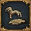
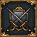
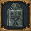
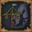
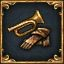
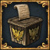
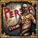
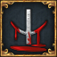

| 数字<id> | 代码关键字<achievement_key> | 工具提示关键字<tooltip> |
|---|---|---|
| 英文名<en_name> | 本地化关键字<localisation> | |
| 英文描述<en_desc> | ||
| 词条名<wiki_name> | 汉化名<paratranz_name> | 图标文件名<image> |
| 中文描述<wiki_desc>和可选的工具提示本地化<achievement_tooltips> | ||
| 汉化描述<paratranz_desc>不写入数据表 | ||
| 1 | achievement_for_the_glory | achievement_for_the_glory_tooltip |
| For the Glory | NEW_ACHIEVEMENT_1_2_NAME | |
| Diplo-annex a vassal. | ||
| 为了荣耀 | 为了荣耀 | 
|
| 外交合并一个附庸国。 外交吞并一个附庸。 | ||
| 外交吞并一个附庸国。 | ||
| 2 | achievement_grand_army | 无 |
| That's a Grand Army | NEW_ACHIEVEMENT_1_3_NAME | |
| Build up your army to your country's maximum army forcelimit. | ||
| 强大的陆军 | 强大的陆军 | 
|
| 扩充陆军至陆军规模上限。 | ||
| 扩充陆军至陆军规模上限。 | ||
| 3 | achievement_grand_navy | 无 |
| That's a Grand Navy | NEW_ACHIEVEMENT_1_4_NAME | |
| Build up your navy to your country's maximum navy forcelimit. | ||
| 强大的海军 | 强大的海军 | 
|
| 扩充海军至海军规模上限。 | ||
| 扩充海军至海军规模上限。 | ||
| 4 | achievement_defender_of_the_faith | 无 |
| Defender of the Faith | NEW_ACHIEVEMENT_1_5_NAME | |
| Become Defender of the Faith. | ||
| 信仰守护者 | 信仰守护者 | 
|
| 成为信仰守护者。 | ||
| 成为信仰守护者。 | ||
| 5 | achievement_until_death_do_us_apart | 无 |
| Until death do us apart | NEW_ACHIEVEMENT_1_6_NAME | |
| Secure a Royal Marriage with another country. | ||
| 至死不渝 | 至死不渝 | 
|
| 与他国王室联姻。 | ||
| 与他国王室联姻。 | ||
| 6 | achievement_that_is_mine | achievement_for_the_glory_tooltip |
| That is mine! | NEW_ACHIEVEMENT_1_7_NAME | |
| Conquer a province. | ||
| 那是我的！ | 那是我的！ |  |
| 征服一个省份。 外交吞并一个附庸。 | ||
| 征服一个省份。 | ||
| 7 | achievement_victorious | achievement_for_the_glory_tooltip |
| Victorious! | NEW_ACHIEVEMENT_1_8_NAME | |
| Win a war. | ||
| 胜利！ | 胜利！ |  |
| 赢得一场战争。 外交吞并一个附庸。 | ||
| 赢得一场战争。 | ||
| 8 | achievement_emperors_new_clothes | 无 |
| The Emperors new clothes | NEW_ACHIEVEMENT_1_9_NAME | |
| Overthrow Austria and become the Emperor of the Holy Roman Empire. | ||
| 皇帝的新衣 | 皇帝的新装 | 
|
| 取代奥地利成为神圣罗马帝国皇帝。 | ||
| 将奥地利赶下神圣罗马帝国皇帝的宝座，并取而代之。 | ||
| 9 | achievement_down_under | 无 |
| Down Under | NEW_ACHIEVEMENT_1_10_NAME | |
| Have a colony in Australia. | ||
| 南下 | 南下 | 
|
| 在澳大利亚拥有一块殖民地。 | ||
| 在澳大利亚拥有一块殖民地。 | ||
| 10 | achievement_isnt_this_the_way_to_india | 无 |
| Isn't this the way to India? | NEW_ACHIEVEMENT_1_11_NAME | |
| Discover the Americas as Castile or Spain. | ||
| 这不是去印度的路吗？ | 这不是通往印度的路吗？ | 
|
| 作为卡斯蒂利亚或西班牙，发现美洲 | ||
| 作为卡斯蒂利亚或西班牙发现美洲大陆。 | ||
| 11 | achievement_azur_seme_de_lis_or | 无 |
| Azur semé de lis or | NEW_ACHIEVEMENT_1_12_NAME | |
| Get all the French Cores as France. | ||
| 洒满金百合的蔚蓝 | 青底金鸢尾 | 
|
| 作为法兰西，拥有全部法兰西的核心。 | ||
| 作为法兰西，获取全部法兰西的核心省份。 | ||
| 12 | achievement_not_so_sad_a_state | 无 |
| Not so sad a state... | NEW_ACHIEVEMENT_1_13_NAME | |
| As Portugal, have a colony in Brazil and in Africa. | ||
| 不再那么悲伤 | 不再那么悲伤的国度…… | 
|
| 作为葡萄牙，在巴西和非洲各拥有一块殖民地。 | ||
| 作为葡萄牙，在巴西和非洲拥有一块殖民地。 | ||
| 13 | achievement_seriously | achievement_seriously_tooltip |
| Seriously?! | NEW_ACHIEVEMENT_1_14_NAME | |
| Kill 10,000 men in one battle. | ||
| 来真的？！ | 认真的？！ |  |
| 在一场战斗中杀死10000人。 在一场战斗中杀死一万人。 | ||
| 在一场战役中杀死一万人。 | ||
| 14 | achievement_its_all_about_the_money | 无 |
| It's all about the money | NEW_ACHIEVEMENT_1_15_NAME | |
| Accumulate 3000 gold. | ||
| 都是为了钱 | 一切围绕金钱 | 
|
| 积累3000金币。 | ||
| 积累3000金币。 | ||
| 15 | achievement_respected | 无 |
| Respected | NEW_ACHIEVEMENT_1_16_NAME | |
| Have 100 prestige, 100 legitimacy and three stability. | ||
| 备受推崇 | 受人尊敬 | 
|
| 拥有100点威望、100点正统性及3点稳定度。 | ||
| 拥有100点威望、100点正统性及3点稳定度。 | ||
| 16 | achievement_true_catholic | 无 |
| True Catholic | NEW_ACHIEVEMENT_1_17_NAME | |
| Control three Cardinals. | ||
| 真正的天主教徒 | 真正的天主教徒 | 
|
| 拥有三个枢机主教。 | ||
| 控制三个枢机。 | ||
| 17 | achievement_truly_divine_ruler | 无 |
| Truly Divine Ruler | NEW_ACHIEVEMENT_1_18_NAME | |
| Get a 5/5/5 Ruler. | ||
| 神君天降 | 神君天降 | 
|
| 拥有一个至少5/5/5的统治者。 | ||
| 获得一位5/5/5的统治者。 | ||
| 18 | achievement_italian_ambition | 无 |
| Italian Ambition | NEW_ACHIEVEMENT_1_19_NAME | |
| Form Italy. | ||
| 意大利雄心 | 意大利雄心 | 
|
| 成立意大利。 | ||
| 成立意大利。 | ||
| 19 | achievement_cold_war | achievement_cold_war_tooltip |
| Cold War | NEW_ACHIEVEMENT_1_20_NAME | |
| Win a war without fighting a single battle. | ||
| 冷战 | 冷战 | 
|
| 没有经过战斗而赢得一场战争。 一仗不打就获得战争胜利。 | ||
| 一仗不打就赢得战争。 | ||
| 20 | achievement_royal_authority | achievement_royal_authority_tooltip |
| Royal Authority | NEW_ACHIEVEMENT_1_21_NAME | |
| Install a union through a succession war. | ||
| 皇家权威 | 王室权力 | 
|
| 通过王位继承战争形成一个联合统治。 通过继承战争达成联统。 | ||
| 通过王位继承战争达成联合统治。 | ||
| 21 | achievement_viva_la_revolucion | achievement_viva_la_revolucion_tooltip |
| Viva la Revolución! | NEW_ACHIEVEMENT_1_22_NAME | |
| Have rebels you support in another country enforce their demands. | ||
| 革命万岁！ | 革命万岁！ | 
|
| 强迫他国接受你所支持的叛军的要求。 使你支持的他国叛军达成其目的。 | ||
| 支持外国叛军并帮助他们达成诉求。 | ||
| 22 | achievement_brothers_in_arms | achievement_brothers_in_arms_tooltip |
| Brothers in Arms | NEW_ACHIEVEMENT_1_23_NAME | |
| Win a war as a secondary participant. | ||
| 战火兄弟 | 战火兄弟 | 
|
| 作为非主导国赢得一场战争。 在不是战争领袖的情况下获得战争胜利。 | ||
| 作为战争的次要参与者赢得一场战争。 | ||
| 23 | achievement_no_pirates_in_my_carribean | 无 |
| No Pirates in my Caribbean | NEW_ACHIEVEMENT_1_24_NAME | |
| Own or have a subject own the entire Caribbean. | ||
| 我的加勒比没有海盗 | 我的加勒比没有海盗 | 
|
| 本国或附属国拥有整个加勒比地区。 | ||
| 自身与属国拥有加勒比地区所有省份。 | ||
| 24 | achievement_master_of_india | 无 |
| Master of India | NEW_ACHIEVEMENT_1_25_NAME | |
| Own and have cores on all of India as a European nation. | ||
| 印度菜 | 印度之主 | 
|
| 作为欧洲国家，占领整个印度地区并拥有核心。 | ||
| 作为欧洲国家，拥有全印度的省份及核心。 | ||
| 25 | achievement_sweden_is_not_overpowered | 无 |
| Sweden is not overpowered! | NEW_ACHIEVEMENT_1_26_NAME | |
| Own and have cores on the entire Baltic coastline as Sweden. | ||
| 瑞典才没有过度加强！ | 瑞典才没有过度加强！ |  |
| 作为瑞典，占领整个波罗的海沿岸地区并拥有核心。 | ||
| 作为瑞典，拥有波罗的海海岸线全部省份及核心。 | ||
| 26 | achievement_my_armies_are_invincible | 无 |
| My armies are invincible! | NEW_ACHIEVEMENT_1_27_NAME | |
| Gain at least 7.0 land morale. | ||
| 我军所向披靡！ | 朕的军队锐不可当！ |  |
| 拥有至少7.0的士气。 | ||
| 陆军士气达到7.0。 | ||
| 27 | achievement_this_navy_can_take_it_all | 无 |
| This navy can take it all | NEW_ACHIEVEMENT_1_28_NAME | |
| Gain at least 7.0 naval morale. | ||
| 舰队攻无不克！ | 这支海军所向披靡 | 
|
| 获得至少7.0的海军士气。 | ||
| 海军士气达到7.0。 | ||
| 28 | achievement_the_pen_is_mightier_than_the_sword | 无 |
| The pen is mightier than the sword | NEW_ACHIEVEMENT_1_29_NAME | |
| Have three unions at the same time as Austria. | ||
| 笔尖胜于干戈 | 笔尖胜于干戈 | 
|
| 作为奥地利，同时拥有三个联统国。 | ||
| 作为奥地利同时联合统治三个国家。 | ||
| 29 | achievement_traditional_player | 无 |
| Traditional Player | NEW_ACHIEVEMENT_1_30_NAME | |
| More than 90 percent Naval and Army Tradition. | ||
| 传统玩家 | 传统玩家 | 
|
| 拥有超过90点的陆军和海军传统。 | ||
| 海军与陆军传统均超过90％。 | ||
| 30 | achievement_its_all_about_luck | achievement_its_all_about_luck_tooltip |
| It's all about luck | NEW_ACHIEVEMENT_1_31_NAME | |
| Win a battle against a great leader, without a leader. | ||
| 运气使然 | 一切都是运气 | 
|
| 用一支无将领的军队击败一支神将带领的敌军。 打败敌人的一位三星将领。 | ||
| 指挥无将领军队战胜敌国神将率领的军队。 | ||
| 31 | achievement_all_belongs_to_mother_russia | 无 |
| All belongs to Mother Russia | NEW_ACHIEVEMENT_6_0_NAME | |
| Start as a country of Russian culture and form Russia. | ||
| 一切属于俄罗斯母亲 | 一切归于俄罗斯母亲 | 
|
| 以俄罗斯文化的国家开局，成立俄罗斯。 | ||
| 以俄罗斯文化国家开局，并成立俄罗斯。 | ||
| 32 | achievement_at_every_continent | 无 |
| At every continent | NEW_ACHIEVEMENT_6_1_NAME | |
| Own one province on each continent. | ||
| 遍布各洲 | 遍布每个大洲 | 
|
| 在每块大陆上拥有省份。 | ||
| 在每个大洲都拥有至少一个省份。 | ||
| 33 | achievement_spain_is_the_emperor | 无 |
| Spain is the Emperor | NEW_ACHIEVEMENT_6_2_NAME | |
| Become the Emperor of the Holy Roman Empire as Spain. | ||
| 西班牙是皇帝 | 西班牙是皇帝 | 
|
| 作为西班牙，成为神圣罗马帝国皇帝。 | ||
| 作为西班牙成为神圣罗马帝国皇帝。 | ||
| 34 | achievement_an_early_reich | 无 |
| An early Reich | NEW_ACHIEVEMENT_6_3_NAME | |
| Form Germany. | ||
| 早来的帝国 | 早产的帝国 | 
|
| 成立德意志。 | ||
| 成立德意志。 | ||
| 35 | achievement_poland_can_into_space | 无 |
| Poland can into space | NEW_ACHIEVEMENT_6_4_NAME | |
| As Poland, reach the maximum level in all technologies (32). | ||
| 波兰可以上太空 | 波兰能上太空 | 
|
| 作为波兰，所有科技都达到32级。 | ||
| 作为波兰，将所有科技提升到最高等级（32）。 | ||
| 36 | achievement_world_discoverer | 无 |
| World Discoverer | NEW_ACHIEVEMENT_6_5_NAME | |
| Discover all non-wasteland land provinces. | ||
| 世界探索者 | 世界探索者 | 
|
| 发现所有非荒芜之地的陆地省份。 | ||
| 发现所有的非荒地的省份。 | ||
| 37 | achievement_the_chrysanthemum_throne | 无 |
| The Chrysanthemum Throne | NEW_ACHIEVEMENT_6_6_NAME | |
| Unite Japan as a Daimyo. | ||
| 菊花王座 | 菊花王座 | 
|
| 作为大名，统一日本。 | ||
| 作为大名统一全日本。 | ||
| 38 | achievement_basileus | 无 |
| Basileus | NEW_ACHIEVEMENT_6_7_NAME | |
| As Byzantium, restore the Roman Empire. | ||
| 巴西琉斯 | 巴西琉斯 | 
|
| 作为拜占庭，重建罗马帝国。 | ||
| 作为拜占庭重建罗马帝国。 | ||
| 39 | achievement_agressive_expander | 无 |
| Agressive Expander | NEW_ACHIEVEMENT_6_8_NAME | |
| Own 200 provinces. | ||
| 侵略扩张者 | 侵略扩张者 | 
|
| 拥有200个省份。 | ||
| 拥有200个省份。 | ||
| 40 | achievement_kaiser_not_just_in_name | 无 |
| A Kaiser not just in name | NEW_ACHIEVEMENT_6_9_NAME | |
| Enact all reforms in the Holy Roman Empire. | ||
| 名副其实的皇帝 | 名副其实的凯撒 | 
|
| 完成神圣罗马帝国所有改革。 | ||
| 完成神圣罗马帝国所有改革。 | ||
| 41 | achievement_norwegian_wood | 无 |
| Norwegian Wood | NEW_ACHIEVEMENT_6_10_NAME | |
| Own or have a subject own all naval supplies provinces as Norway. | ||
| 挪威的森林 | 挪威的森林 | 
|
| 用挪威开局，本国或附属国拥有所有生产船具的省份。 | ||
| 作为挪威，自身与属国拥有全世界制造船具的省份。 | ||
| 42 | achievement_african_power | 无 |
| African Power | NEW_ACHIEVEMENT_6_11_NAME | |
| Own and have cores on all provinces in Africa as Kongo. | ||
| 非洲霸权 | 非洲权力 | 
|
| 用刚果开局，拥有全部非洲省份及其核心。 | ||
| 作为刚果，拥有全非洲的省份及核心。 | ||
| 43 | achievement_no_trail_of_tears | 无 |
| No Trail of Tears | NEW_ACHIEVEMENT_6_12_NAME | |
| Own and have cores on the Thirteen Colonies as Cherokee with all institutions embraced. | ||
| 再无血泪之路 | 再无血泪之路 | 
|
| 作为切罗基，拥有十三殖民地地区的省份及核心，并接纳全部思潮。 | ||
| 作为切罗基，拥有十三殖民地地区的省份及核心，并接纳全部思潮。 | ||
| 44 | achievement_one_night_in_paris | 无 |
| One Night in Paris | NEW_ACHIEVEMENT_6_13_NAME | |
| Start as England, own and have a core on Paris (do not form another country unless it's Great Britain). | ||
| 巴黎一夜 | 巴黎一夜 | 
|
| 用英格兰开局，占领巴黎并拥有核心（不要成立除大不列颠外的国家）。 | ||
| 以英格兰开局，拥有核心省份巴黎（不能成立除大不列颠外的国家）。 | ||
| 45 | achievement_definitely_the_sultan_of_rum | 无 |
| Definitely the Sultan of Rum | NEW_ACHIEVEMENT_6_14_NAME | |
| Own and have cores on Rome, Moscow and Istanbul as Ottomans. | ||
| 至高无上的罗姆苏丹 | 毫无争议的罗姆苏丹 | 
|
| 用奥斯曼开局，占领罗马，莫斯科和伊斯坦布尔并拥有核心。 | ||
| 作为奥斯曼，拥有核心省份罗马、莫斯科和伊斯坦布尔。 | ||
| 46 | achievement_market_control | 无 |
| Market Control | NEW_ACHIEVEMENT_6_15_NAME | |
| Be trade leader of seven different goods. | ||
| 控制市场 | 市场掌控 | 
|
| 作为七种不同货物的主导者。 | ||
| 成为7种不同贸易货物的主导者。 | ||
| 47 | achievement_ruina_imperii | 无 |
| Ruina Imperii | NEW_ACHIEVEMENT_6_16_NAME | |
| Dismantle the Holy Roman Empire. | ||
| 帝国末路 | 帝国毁灭 | 
|
| 解散神圣罗马帝国。 | ||
| 取缔神圣罗马帝国。 | ||
| 48 | achievement_world_conqueror | 无 |
| World Conqueror | NEW_ACHIEVEMENT_6_17_NAME | |
| Own or have a subject own the entire world. | ||
| 世界征服者 | 世界征服者 | 
|
| 本国或附属国拥有全世界。 | ||
| 自身与属国拥有全世界所有省份。 | ||
| 49 | achievement_the_three_mountains | 无 |
| The Three Mountains | NEW_ACHIEVEMENT_6_18_NAME | |
| Own or have a subject own the entire world as Ryukyu. | ||
| 三山帝国 | 三山帝国 | 
|
| 用琉球开局，本国或附属国拥有全世界。 | ||
| 作为琉球，自身与属国拥有全世界所有省份。 | ||
| 50 | achievement_jihad | 无 |
| Jihad | NEW_ACHIEVEMENT_6_19_NAME | |
| As Najd, own 500 Sunni provinces. | ||
| 吉哈德圣战 | 吉哈德 | 
|
| 用内志开局，拥有500个逊尼省份。 | ||
| 作为内志，拥有500个逊尼派省份。 | ||
| 51 | achievement_grand_coalition | 无 |
| Grand Coalition | NEW_ACHIEVEMENT_6_25_NAME | |
| Join a coalition of more than 5 nations. | ||
| 巨大的包围网 | 大包围网 | 
|
| 加入一个超过5个成员的包围网同盟。 | ||
| 加入一个成员国超过5个的包围网。 | ||
| 52 | achievement_winged_hussars | 无 |
| Winged Hussars | NEW_ACHIEVEMENT_6_24_NAME | |
| Have Winged Hussars as your active unit with more than +50% cavalry combat ability. | ||
| 翼骑兵 | 翼骑兵 | 
|
| 激活骑兵兵种翼骑兵，且骑兵作战能力加成超过+50％。 | ||
| 激活骑兵兵种翼骑兵，且骑兵作战能力加成超过+50％。 | ||
| 53 | achievement_trade_hegemon | 无 |
| Trade Hegemon | NEW_ACHIEVEMENT_6_23_NAME | |
| Starting as any European country, conquer and have cores on Aden, Hormoz and Malacca. | ||
| 贸易霸权 | 贸易霸权 | 
|
| 以任意欧洲国家开局，征服亚丁、霍尔木兹和马六甲并拥有核心。 | ||
| 以任意欧洲国家开局，征服并拥有亚丁、霍尔木兹以及马六甲的核心。 | ||
| 54 | achievement_sunset_invasion | 无 |
| Sunset Invasion | NEW_ACHIEVEMENT_6_21_NAME | |
| Own and have cores on Lisbon, Madrid, Paris, London, Amsterdam and Rome as the Aztecs. | ||
| 日落入侵 | 日落入侵 | 
|
| 作为阿兹特克，拥有核心省份里斯本、马德里、巴黎、伦敦、阿姆斯特丹以及罗马。 | ||
| 作为阿兹特克，拥有核心省份里斯本、马德里、巴黎、伦敦、阿姆斯特丹以及罗马。 | ||
| 55 | achievement_luck_of_the_irish | 无 |
| Luck of the Irish | NEW_ACHIEVEMENT_6_22_NAME | |
| Own and have cores on the British Isles as an Irish nation. | ||
| 爱尔兰人的幸运 | 爱尔兰人的幸运 | 
|
| 作为一个爱尔兰国家，占领全部不列颠岛并拥有核心。 | ||
| 作为爱尔兰国家，拥有有整个不列颠群岛的省份及核心。 | ||
| 56 | achievement_just_a_little_patience | 无 |
| Just a Little Patience | NEW_ACHIEVEMENT_6_27_NAME | |
| Play a campaign from 1444 until 1820. | ||
| 只需要一点耐心 | 只需要一点点耐心 | 
|
| 从1444年开局一直玩到1820年。 | ||
| 以1444年的剧本开局，玩到1820年结束。 | ||
| 57 | achievement_turning_the_tide | 无 |
| Turning the Tide | NEW_ACHIEVEMENT_6_30_NAME | |
| Start as a Steppe Horde in 1444 and embrace all institutions. | ||
| 力挽狂澜 | 力挽狂澜 | 
|
| 以1444年的游牧部落开局，接受所有思潮。 | ||
| 以1444年草原游牧部落开局，接受所有思潮。 | ||
| 58 | achievement_double_the_love | 无 |
| Double the Love | NEW_ACHIEVEMENT_6_26_NAME | |
| Start with no unions and get two at the same time. | ||
| 双份的爱 | 双份爱意 | 
|
| 以无联统国的状态开局，同时拥有两个联统国。 | ||
| 以没有被联统国的国家开局，在同一时间获得两个被联统国。 | ||
| 59 | achievement_liberty_or_death | 无 |
| Liberty or Death | NEW_ACHIEVEMENT_6_28_NAME | |
| Start as USA in 1776 bookmark and own all your cores while being at peace. | ||
| 不自由，毋宁死 | 不自由毋宁死 | 
|
| 以1776年剧本的美利坚开局，并在和平状态下拥有自己的全部核心。 | ||
| 1776年剧本以美国开局，通过和平手段取回全部美国核心领土。 | ||
| 60 | achievement_nobody_wants_to_die | 无 |
| Nobody wants to die | NEW_ACHIEVEMENT_6_29_NAME | |
| Own Timbuktu as Songhai | ||
| 没人想去死 | 没有人想死 | 
|
| 用桑海开局，拥有廷巴克图。 | ||
| 作为桑海，拥有省份廷巴克图。 | ||
| 61 | achievement_in_the_name_of_the_father | 无 |
| In the Name of the Father | NEW_ACHIEVEMENT_6_31_NAME | |
| As an Orthodox country, have 100 Patriarch Authority. | ||
| 以父之名 | 以父之名 | 
|
| 作为东正教国家，拥有100点牧首权威。 | ||
| 作为东正教国家，获取100牧首权威。 | ||
| 62 | achievement_the_rising_sun | 无 |
| The Rising Sun | NEW_ACHIEVEMENT_7_0_NAME | |
| Own and have cores on all of Japan as a European nation. | ||
| 旭日东升 | 初升旭日 | 
|
| 作为欧洲国家，拥有整个日本及其核心。 | ||
| 作为欧洲国家，拥有全日本的省份及核心。 | ||
| 63 | achievement_the_five_colonies | 无 |
| The Five Colonies | NEW_ACHIEVEMENT_7_1_NAME | |
| Have five colonial nations. | ||
| 五个殖民领地 | 五殖民领 | 
|
| 拥有五个殖民领。 | ||
| 拥有五个殖民领国家。 | ||
| 64 | achievement_the_re_reconquista | 无 |
| The Re-Reconquista | NEW_ACHIEVEMENT_7_2_NAME | |
| As Granada, form Andalusia and reconquer all of Iberia. | ||
| 反收复失地运动 | 再再征服运动 | 
|
| 用格拉纳达开局，成立安达卢西亚并夺回整个伊比利亚。 | ||
| 作为格拉纳达，成立安达卢西亚并重新征服整个伊比利亚。 | ||
| 65 | achievement_turn_the_table | 无 |
| Turn the Table | NEW_ACHIEVEMENT_7_3_NAME | |
| As a colony, break free and vassalize your former overlord without forming any other nation. | ||
| 以下克上 | 以下克上 | 
|
| 作为殖民领，不成立其他国家，获得独立并附庸你之前的领主。 | ||
| 作为殖民领，在不成立其他国家的前提下，取得独立并使你的前宗主国成为你的附庸。 | ||
| 66 | achievement_the_great_khan | 无 |
| The Great Khan | NEW_ACHIEVEMENT_7_4_NAME | |
| Starting as Mongolia or Great Horde, own or have a subject own the Chinese, Russian and Persian regions. | ||
| 大汗 | 大汗 | 
|
| 以蒙古或大帐开局，自身与属国拥有中国、俄罗斯以及波斯地区的所有省份。 | ||
| 以蒙古或大帐开局，自身与属国拥有中国、俄罗斯以及波斯地区的所有省份。 | ||
| 67 | achievement_four_for_trade | 无 |
| Four For Trade | NEW_ACHIEVEMENT_7_5_NAME | |
| Form four Trade Companies and get bonus merchants from all of them. | ||
| 四方行商 | 贸易四方 | 
|
| 成立四个贸易公司，并获得全部作为奖励的商人团。 | ||
| 设立四个贸易公司并获得作为奖励的商人团。 | ||
| 68 | achievement_the_grand_armada | 无 |
| The Grand Armada | NEW_ACHIEVEMENT_7_6_NAME | |
| Have 500 heavy ships and no loans. | ||
| 无敌舰队 | 无敌舰队 | 
|
| 在没有贷款的情况下拥有500艘重型战舰。 | ||
| 在没有贷款的情况下拥有500艘重型战舰。 | ||
| 69 | achievement_je_maintiendrai | 无 |
| Je maintiendrai | NEW_ACHIEVEMENT_7_7_NAME | |
| Form the Netherlands as a minor nation starting with Dutch culture. | ||
| 我将一如既往 | 坚持不懈 | 
|
| 以荷兰文化的小国开局，成立尼德兰。 | ||
| 以荷兰文化小国开局，成立尼德兰。 | ||
| 70 | achievement_a_protected_market | 无 |
| A Protected Market | NEW_ACHIEVEMENT_7_8_NAME | |
| Have 100% Mercantilism. | ||
| 市场保护 | 市场保护 | 
|
| 重商主义达到100%。 | ||
| 拥有100%重商主义。 | ||
| 71 | achievement_queen_of_mercury | 无 |
| Queen of Mercury | NEW_ACHIEVEMENT_7_9_NAME | |
| As Kilwa, own and have cores on Zanzibar and Bombay (Thana). | ||
| 水星皇后 | 默克里的皇后 | 
|
| 作为基尔瓦，拥有桑给巴尔和孟买（塔那）。 | ||
| 作为基尔瓦，占有桑给巴尔和孟买（塔那）并且拥有其核心。 | ||
| 72 | achievement_a_pile_of_gold | 无 |
| A Pile of Gold | NEW_ACHIEVEMENT_7_10_NAME | |
| Own 10 provinces which produce gold. | ||
| 黄金滚滚 | 黄金成堆 | 
|
| 拥有10个生产黄金的省份。 | ||
| 拥有10个出产黄金的省份。 | ||
| 73 | achievement_sons_of_carthage | 无 |
| Sons of Carthage | NEW_ACHIEVEMENT_7_11_NAME | |
| As Tunisia, own and have cores on Sicily, Sardinia, the Balearic Islands, the coast of Algiers and the southern coast of Spain. | ||
| 迦太基之子 | 迦太基之子 | 
|
| 作为突尼斯，拥有西西里岛，撒丁岛，巴利阿里群岛，阿尔及尔海岸和西班牙南部海岸并拥有核心。 | ||
| 作为突尼斯，拥有西西里、撒丁尼亚、巴利阿里群岛、阿尔及尔海岸线以及西班牙南部海岸线的省份及核心。 | ||
| 74 | achievement_the_princess_is_in_this_castle | 无 |
| The Princess is in this Castle | NEW_ACHIEVEMENT_7_12_NAME | |
| As a country that does not start with a female heir, have a female heir while having a Castle in your capital (more advanced fort buildings do not count). | ||
| 城堡里的公主 | 公主就在这座城堡里 | 
|
| 作为开局没有女性继承人的国家，获得女性继承人且首都拥有城堡（超过2级的要塞不予计数）。 | ||
| 以继承人不是女性的国家开局，获得一位女性继承人，同时在首都建有城堡 （不算更高级的要塞建筑物）。 | ||
| 75 | achievement_electable | 无 |
| Electable! | NEW_ACHIEVEMENT_7_13_NAME | |
| Become an elector in the HRE as a country which does not start as elector. | ||
| 有选票啦！ | 可以选举了！ |  |
| 以非选帝侯的国家开局，并成为神罗的选帝侯。 | ||
| 以非选帝侯开局，成为神圣罗马帝国的选帝侯。 | ||
| 76 | achievement_vasa_or_wettin | 无 |
| Vasa or Wettin? | NEW_ACHIEVEMENT_7_14_NAME | |
| Get a ruler of your dynasty on the throne of Poland or the Commonwealth while they are an elective monarchy. | ||
| 瓦萨还是维丁？ | 瓦萨还是韦廷？ | 
|
| 当波兰或波兰立陶宛联邦是选举君主制时，支持你的王室成员上位成为其统治者。 | ||
| 当波兰或者是波兰立陶宛联邦是选举君主制时，支持你的王室成员上位成为其统治者。 | ||
| 77 | achievement_sinaasappel | 无 |
| Sinaasappel! | NEW_ACHIEVEMENT_7_15_NAME | |
| Get Orangists in power with 100% Republican Tradition, and owning a province in China. | ||
| 中国橙！ | 中国橙！ | |
| 奥兰治派当政同时拥有100点共和传统，并在中国地区有一个省份。 | ||
| 共和传统达到100%，且掌权派为奥兰治派，并在中华区域拥有一个省份。 | ||
| 78 | achievement_one_king_to_rule | 无 |
| One King to Rule! | NEW_ACHIEVEMENT_7_16_NAME | |
| As Poland, become an absolutist monarchy, abolishing the Sejm. | ||
| 至尊王，驭众王！ | 至尊王，驭众王！ | |
| 用波兰开局，采用专制君主制，废除瑟姆国会。 | ||
| 作为波兰，成为君主专制国家，废止瑟姆议会。 | ||
| 79 | achievement_venetian_sea | 无 |
| Venetian Sea | NEW_ACHIEVEMENT_7_17_NAME | |
| Have a 75% Trade share in both the Alexandria and Constantinople nodes as Venice, owning less than 10 cities. | ||
| 威尼斯的海 | 威尼斯之海 | 
|
| 作为威尼斯，在拥有的省份少于10个的情况下占有亚历山大港与君士坦丁堡贸易节点75%的贸易份额。 | ||
| 作为威尼斯，在拥有的省份少于10个的情况下占有亚历山大港与君士坦丁堡贸易节点75%的贸易份额。 | ||
| 80 | achievement_iron_price | 无 |
| The Iron Price | NEW_ACHIEVEMENT_7_18_NAME | |
| Restore the Danelaw region to Danish rule, and make it Danish culture. | ||
| 铁钱 | 铁钱 | 
|
| 恢复丹麦在丹麦法区（英格兰东北部）的统治，并将其转化为丹麦文化。 | ||
| 恢复丹麦在丹麦法区的统治，并将其转为丹麦文化 | ||
| 81 | achievement_total_control | 无 |
| Total Control | NEW_ACHIEVEMENT_7_21_NAME | |
| Own 100 or more provinces with no local autonomy or unrest. | ||
| 尽在掌握 | 尽在掌握 | 
|
| 拥有至少100个无自治度和叛乱度的省份。 | ||
| 有100个或以上的省份没有自治度或叛乱度。 | ||
| 82 | achievement_center_of_attention | 无 |
| Center of Attention | NEW_ACHIEVEMENT_7_20_NAME | |
| Own both a Protestant and a Reformed Center of Reformation. | ||
| 万众瞩目 | 瞩目焦点 | 
|
| 同时拥有新教和改革宗的改革中心。 | ||
| 同时拥有新教和改革宗的改革中心。 | ||
| 83 | achievement_this_revolution_was_crushed | 无 |
| This Revolution Was Crushed | NEW_ACHIEVEMENT_7_22_NAME | |
| In a war against the target of the Revolution, control their capital and have at least 99% war score. | ||
| 革命已被粉碎 | 粉碎革命 | 
|
| 进行一场针对革命目标国的战争，占领他们的首都并且拥有至少99%的战争分数。 | ||
| 与革命目标国交战，控制他们的首都且有至少99%的战争分数。 | ||
| 84 | achievement_a_manchurian_candidate | 无 |
| A Manchurian Candidate | NEW_ACHIEVEMENT_7_19_NAME | |
| Start as one of the Jurchen tribes and form Qing. | ||
| 满洲候选人 | 满洲候选人 | 
|
| 以女真部落之一开局，成立大清。 | ||
| 以女真部落之一开局，成立大清帝国。 | ||
| 85 | achievement_land_of_eastern_jade | 无 |
| Land of Eastern Jade | NEW_ACHIEVEMENT_7_23_NAME | |
| Own a core province in Central America as a Buddhist country. | ||
| 东方璞玉之地 | 东方璞玉之地 | 
|
| 作为佛教国家，在中美洲拥有一个核心省份。 | ||
| 作为佛教国家，在中美洲有一个核心省份。 | ||
| 86 | achievement_thats_a_silk_road | achievement_thats_a_silk_road_tooltip |
| That's a Silk Road | NEW_ACHIEVEMENT_7_24_NAME | |
| Own or have a subject own all provinces in the world producing silk. | ||
| 丝绸之路 | 那是一条丝绸之路 | 
|
| 本国或附属国拥有世界上全部生产丝绸的省份。 自身与属国拥有所有生产丝绸的省份。 | ||
| 自身与属国拥有世界上生产丝绸的所有省份。 | ||
| 87 | achievement_my_true_friend | achievement_my_true_friend_tooltip |
| My True Friend | NEW_ACHIEVEMENT_7_25_NAME | |
| Go to war in support of a rebel faction and win, enforcing their demands. | ||
| 真正的朋友 | 真正的朋友 | 
|
| 通过战争支持另一个国家的叛军派系达成目标。 宣战支持另一个国家的叛军派系，助其达成他们的目的。 | ||
| 以支持叛军派系的理由发动战争并获胜，强制对方同意叛军的要求。 | ||
| 88 | achievement_marshy_march | 无 |
| Marshy March | NEW_ACHIEVEMENT_7_26_NAME | |
| Have a march with at least two marsh provinces. | ||
| 沼泽卫戍 | 沼泽要塞 | 
|
| 有一个名下有两个沼泽省份的卫戍国。 | ||
| 拥有至少有两个沼泽地形的省份的卫戍国。 | ||
| 89 | achievement_shahanshah | 无 |
| Shahanshah | NEW_ACHIEVEMENT_7_27_NAME | |
| Start as Tabarestan and form Persia. | ||
| 沙汗沙 | 万王之王 | 
|
| 用阿尔达比勒开局，成立波斯。 | ||
| 以阿尔达比勒开局，成立波斯。 | ||
| 90 | achievement_die_please_die | 无 |
| Die Please Die | NEW_ACHIEVEMENT_7_28_NAME | |
| Have a ruler with 1 or lower in all three categories who is over the age of 70. | ||
| 请你去世 | 请去死吧 | 
|
| 拥有一个三项属性均不高于1的君主，并且年龄在70岁以上。 | ||
| 君主三项能力均不超过1，并活到70岁以上。 | ||
| 91 | achievement_holy_trinity | 无 |
| Holy Trinity | NEW_ACHIEVEMENT_7_29_NAME | |
| As the Papacy, own Jerusalem and have Livonian Order, Teutonic Order and The Knights as Marches. | ||
| 圣三一 | 圣三一 | 
|
| 作为教宗国，拥有耶路撒冷，同时使利沃尼亚骑士团、条顿骑士团和医院骑士团成为自己的卫戍国。 | ||
| 作为教宗国据有耶路撒冷，同时使利沃尼亚骑士团、条顿骑士团和医院骑士团成为自己的卫戍国。 | ||
| 92 | achievement_switzerlake | 无 |
| Switzerlake | NEW_ACHIEVEMENT_7_30_NAME | |
| Own 99 provinces as Switzerland while owning no ports. | ||
| 瑞士湖 | 瑞士湖 | 
|
| 作为瑞士，坐拥99个内陆省份却没有港口。 | ||
| 作为瑞士，拥有99个内陆省份。 | ||
| 93 | achievement_king_of_jerusalem | 无 |
| King of Jerusalem | NEW_ACHIEVEMENT_7_31_NAME | |
| Form the Kingdom of Jerusalem as Cyprus or The Knights. | ||
| 耶路撒冷之王 | 耶路撒冷之王 | 
|
| 用塞浦路斯或者医院骑士团成立耶路撒冷王国。 | ||
| 作为塞浦路斯或医院骑士团，成立耶路撒冷王国。 | ||
| 94 | achievement_krabater | 无 |
| Krabater | NEW_ACHIEVEMENT_8_0_NAME | |
| Form the nation of Croatia and station a unit of cavalry in Stockholm. | ||
| 克拉巴特 | 克拉巴特 | 
|
| 成立克罗地亚，并在斯德哥尔摩驻扎一队骑兵。 | ||
| 成立克罗地亚，派遣一支骑兵部队驻扎在斯德哥尔摩。 | ||
| 95 | achievement_lion_of_the_north | achievement_lion_of_the_north_tooltip |
| Lion of the North | NEW_ACHIEVEMENT_8_1_NAME | |
| Start as Sweden and lead the Protestant League to victory against the Emperor. | ||
| 北方雄狮 | 北方雄狮 | 
|
| 以瑞典开局，领导新教联盟战胜皇帝。 作为新教联盟的领袖战胜神圣罗马帝国皇帝，打赢宗教战争。 | ||
| 瑞典开局，并且领导新教同盟战胜皇帝。 | ||
| 96 | achievement_guaranteer_of_peace | 无 |
| Guarantor of Peace | NEW_ACHIEVEMENT_8_2_NAME | |
| Guarantee the Independence of France, The Ottoman Empire and Russia. | ||
| 和平保证人 | 和平守护者 | 
|
| 保证法兰西、奥斯曼、俄罗斯的独立。 | ||
| 对法兰西，奥斯曼帝国和俄罗斯保证独立 | ||
| 97 | achievement_servitor_of_jagannath | 无 |
| Foremost Servitor of Jagannath | NEW_ACHIEVEMENT_8_3_NAME | |
| Start as Orissa and own or have a subject own all tropical wood provinces. | ||
| 贾格纳提神最重要的仆人 | 扎格纳特的首要仆人 | 
|
| 以奥里萨开局，本国或附属国拥有所有生产热带木材的省份。 | ||
| 以奥里萨开局，自身与属国拥有世界上所有生产热带木材的省份。 | ||
| 98 | achievement_bengal_tiger | 无 |
| Bengal Tiger | NEW_ACHIEVEMENT_8_4_NAME | |
| Start as Bengal and own Samarkand as a core province. | ||
| 孟加拉虎 | 孟加拉虎 | 
|
| 以孟加拉开局，拥有核心省份撒马尔罕。 | ||
| 以孟加拉开局，拥有核心省份撒马尔罕。 | ||
| 99 | achievement_prester_john | 无 |
| Prester John | NEW_ACHIEVEMENT_8_5_NAME | |
| Own and have cores on Alexandria, Antioch and Constantinople as Coptic Ethiopia. | ||
| 祭司王约翰 | 祭司王约翰 | 
|
| 作为科普特正教的埃塞俄比亚，占领亚历山大、安条克、君士坦丁堡并拥有核心。 | ||
| 作为信仰科普特正教的埃塞俄比亚，拥有核心省份亚历山大、安条克和君士坦丁堡。 | ||
| 100 | achievement_auld_alliance | 无 |
| Auld Alliance Reversed | NEW_ACHIEVEMENT_8_6_NAME | |
| As Scotland, have France as a vassal (do not form Great Britain). | ||
| 老同盟反转 | 逆转老同盟 | 
|
| 作为苏格兰，附庸法兰西（不成立大不列颠）。 | ||
| 作为苏格兰，让法兰西成为附庸（不成立大不列颠）。 | ||
| 101 | achievement_gothic_invasion | 无 |
| Gothic Invasion | NEW_ACHIEVEMENT_8_7_NAME | |
| Start as Theodoro and conquer all Germanic culture provinces in Europe. | ||
| 哥特入侵 | 哥特入侵 | 
|
| 以狄奥多罗开局，征服欧洲所有日耳曼文化省份。 | ||
| 以狄奥多罗开局，征服欧洲所有日耳曼文化省份。 | ||
| 102 | achievement_kow_tow | 无 |
| Kow-Tow | NEW_ACHIEVEMENT_8_8_NAME | |
| As Ming, have a subject from each religion group. | ||
| 叩头 | 叩头 | 
|
| 作为大明，附属国涵盖所有宗教组。 | ||
| 作为明，拥有各种宗教组信仰的属国。 | ||
| 103 | achievement_barbarossa | 无 |
| Barbarossa | NEW_ACHIEVEMENT_8_9_NAME | |
| As a Maghrebi nation, have 500 light ships privateering at the same time. | ||
| 巴巴罗萨 | 巴巴罗萨 | 
|
| 作为马格里布国家，同时拥有500艘轻型船只进行私掠。 | ||
| 作为马格里布国家，有500条轻型船同时进行私掠。 | ||
| 104 | achievement_georgia_on_my_mind | 无 |
| Georgia on my Mind | NEW_ACHIEVEMENT_8_10_NAME | |
| Fully own all three Georgias. | ||
| 我心中的佐治亚 | 乔治亚在我心 | 
|
| 拥有全部三个Georgia（格鲁吉亚，佐治亚州，南乔治亚岛）。 | ||
| 拥有所有三个格鲁吉亚省份。 | ||
| 105 | achievement_albania_or_iberia | 无 |
| Albania or Iberia | NEW_ACHIEVEMENT_8_11_NAME | |
| As Albania, own or have a subject own Iberia and the Caucasus. | ||
| 阿尔巴尼亚还是伊比利亚 | 阿尔巴尼亚或伊比利亚 | 
|
| 用阿尔巴尼亚开局，本国或附属国拥有整个伊比利亚半岛和高加索地区。 | ||
| 作为阿尔巴尼亚，自身与属国拥有伊比利亚和高加索地区的所有省份。 | ||
| 106 | achievement_spice_must_flow | 无 |
| The Spice Must Flow | NEW_ACHIEVEMENT_8_12_NAME | |
| Form the nation of Malaya. | ||
| 香料必须流通 | 香料必须流动 | 
|
| 成立马来亚。 | ||
| 成立马来亚 | ||
| 107 | achievement_raja_of_the_rajput_reich | 无 |
| Raja of the Rajput Reich | NEW_ACHIEVEMENT_8_13_NAME | |
| Conquer all of Germany as Nagaur. | ||
| 拉其普特德意志皇帝 | 拉杰普特国的拉贾 | 
|
| 作为纳高尔征服全德意志 | ||
| 以纳高尔征服全德意志 | ||
| 108 | achievement_sun_never_sets_on_the_indian_empire | 无 |
| The Sun Never Sets on the Indian Empire | NEW_ACHIEVEMENT_8_14_NAME | |
| Form Hindustan or Bharat and own or have a subject own Cape, London, Hong Kong (Canton) and Ottawa (Kichesipi). | ||
| 日不落印度帝国 | 印度帝国日不落 | 
|
| 成立印度斯坦或婆罗多，并拥有开普敦、伦敦、香港（广州）和渥太华（基策斯匹）。 | ||
| 成立印度斯坦或婆罗多，自身与属国拥有开普、伦敦、香港（广州）以及渥太华（基策斯匹）。 | ||
| 109 | achievement_over_a_thousand | 无 |
| Over a Thousand! | NEW_ACHIEVEMENT_8_15_NAME | |
| Own 1001 provinces directly. | ||
| 突破一千！ | 突破一千！ | |
| 刚好拥有1001个省份。 | ||
| 正好拥有1001块省份 | ||
| 110 | achievement_draculas_revenge | 无 |
| Dracula's Revenge | NEW_ACHIEVEMENT_8_16_NAME | |
| Start as Wallachia or Moldavia, form Romania and own or have a subject own all of the Balkans. | ||
| 德古拉的复仇 | 德古拉的复仇 | 
|
| 用瓦拉几亚或摩尔达维亚开局，成立罗马尼亚，且本国或附属国拥有整个巴尔干半岛。 | ||
| 以瓦拉几亚或者摩尔达维亚开局，成立罗马尼亚，自身与属国拥有巴尔干地区的所有省份。 | ||
| 111 | achievement_arabian_coffee | 无 |
| Arabian Coffee | NEW_ACHIEVEMENT_8_17_NAME | |
| Form Arabia and be the nation producing the most coffee in the world. | ||
| 阿拉伯咖啡 | 阿拉伯咖啡 | 
|
| 成立阿拉伯，并成为世界上咖啡产量最高的国家 。 | ||
| 成立阿拉伯 并成为世界上咖啡产量最高的国家 | ||
| 112 | achievement_even_better_than_piet_heyn | achievement_even_better_than_piet_heyn_tooltip |
| Even Better than Piet Heyn | NEW_ACHIEVEMENT_8_18_NAME | |
| Gain over 100 gold from privateering a single treasure fleet. | ||
| 比派特·海恩更棒 | 比皮特·海恩更牛 | 
|
| 通过私掠一个宝藏船队抢到超过100金。 劫掠一支珍宝船队，获得超过100金币。 | ||
| 在一次针对珍宝船队的私掠中获得超过100金币。 | ||
| 113 | achievement_a_sun_god | 无 |
| A Sun God | NEW_ACHIEVEMENT_8_19_NAME | |
| Form Inca, embrace all Institutions and own all of South America as core provinces. | ||
| 太阳之神 | 太阳神 | 
|
| 成立印加，接受所有思潮并拥有整个南美洲作为核心省份。 | ||
| 成立印加，接受所有思潮并将整个南美化为自己的核心领土。 | ||
| 114 | achievement_on_the_edge_of_madness | achievement_on_the_edge_of_madness_tooltip_95_doom |
| On the Edge of Madness | NEW_ACHIEVEMENT_8_20_NAME | |
| As Aztecs, reach 95 Doom, then go 20 years without Doom hitting 100. | ||
| 在疯狂的边缘 | 疯狂的边缘 | 
|
| 作为阿兹特克，在末日值到达95后，持续20年让末日值不达到100。 末日值达到95后在20年内使其不超过100。 | ||
| 作为阿兹特克，末日值达到95且之后20年内不达到100。 | ||
| 115 | achievement_magellans_voyage | achievement_magellans_voyage_tooltip |
| Magellan’s Voyage | NEW_ACHIEVEMENT_8_21_NAME | |
| Make the first circumnavigation. | ||
| 麦哲伦的远航 | 麦哲伦航行 | 
|
| 完成首次环球航行。 首个完成环球航行。 | ||
| 第一个完成环球航行。 | ||
| 116 | achievement_imperio_espanol | 无 |
| Imperio español | NEW_ACHIEVEMENT_8_22_NAME | |
| As Spain have Mexico, Panama, Havana, Cuzco in colonial Nations under you. | ||
| 西班牙帝国 | 西班牙帝国 | 
|
| 作为西班牙，让自己的殖民领拥有墨西哥、巴拿马、哈瓦那和库斯科。 | ||
| 作为西班牙，名下的殖民地国家拥有省份墨西哥、巴拿马、哈瓦那及库斯科。 | ||
| 117 | achievement_blockader | 无 |
| Blockader | NEW_ACHIEVEMENT_8_23_NAME | |
| Blockade at least 10 ports of one enemy. | ||
| 封锁者 | 封锁线 | 
|
| 封锁敌人的至少10个港口。 | ||
| 封锁一个敌国的至少10个港口。 | ||
| 118 | achievement_this_is_persia | 无 |
| This is Persia! | NEW_ACHIEVEMENT_8_24_NAME | |
| Form Persia and own Egypt, Anatolia and Greece as core provinces. | ||
| 这就是波斯！ | 这就是波斯！ |  |
| 成立波斯并拥有埃及、安纳托利亚和希腊作为核心省份。 | ||
| 成立波斯，并且拥有全埃及、安纳托利亚和希腊地区的省份核心。 | ||
| 119 | achievement_kirishitan_japan | 无 |
| Kirishitan Japan | NEW_ACHIEVEMENT_8_25_NAME | |
| Start as a Japanese Daimyo, convert yourself and all of Japan to Christianity. | ||
| 吉利支丹日本 | 切支丹日本 | 
|
| 以日本大名开局，改信基督并把所有日本省份转化为基督教信仰。 | ||
| 作为一个日本大名，使你自己和全日本都转信基督教。 | ||
| 120 | achievement_hessian_mercenaries | 无 |
| Hessian Mercenaries | NEW_ACHIEVEMENT_8_26_NAME | |
| As Hesse, have at least 50 regiments of mercenaries and no loans. | ||
| 黑森佣兵 | 黑森佣兵 | 
|
| 作为黑森，在没有贷款的情况下拥有50K雇佣兵团。 | ||
| 作为黑森，在没有贷款的情况下拥有50支（50K）雇佣兵团。 | ||
| 121 | achievement_baltic_crusader | 无 |
| Baltic Crusader | NEW_ACHIEVEMENT_8_27_NAME | |
| As Teutonic Order or Livonian Order, own all of Russia as core provinces and convert it to Catholic. | ||
| 波罗的海十字军 | 波罗的海十字军 | 
|
| 作为条顿骑士团或利沃尼亚骑士团，拥有所有俄罗斯的核心省份并且将其转化为天主教。 | ||
| 作为条顿骑士团或利沃尼亚骑士团，全俄罗斯地区的省份是其核心省份，这些省份信仰转天主教。 | ||
| 122 | achievement_neither_holy_nor_german | 无 |
| Neither Holy, Nor German | NEW_ACHIEVEMENT_8_28_NAME | |
| Have 7 Free Cities in the Empire, none of which is of a Germanic culture. | ||
| 既不神圣，也非日耳曼 | 既不神圣，也不德意志 | |
| 在神圣罗马帝国中有7个非日耳曼文化的自由市。 | ||
| 在神圣罗马帝国中有7个非日耳曼文化的自由市。 | ||
| 123 | achievement_colonial_management | achievement_tooltip_colonial_management |
| Colonial Management | NEW_ACHIEVEMENT_8_29_NAME | |
| Have 3 colonial governors that were directly appointed by you at the same time. | ||
| 殖民地管理 | 殖民地管理 | 
|
| 同时直接任命三个殖民领的总督。 从另一个国家偷到地图。 | ||
| 在同一时间直接任命3位殖民地总督。 | ||
| 124 | achievement_voting_streak | 无 |
| Voting Streak | NEW_ACHIEVEMENT_8_30_NAME | |
| Successfully pass 11 issues in a row in Parliament. | ||
| 投票连胜 | 投票连胜 | 
|
| 在议会连续成功通过11项议案。 | ||
| 在议会连续通过11项议案。 | ||
| 125 | achievement_industrial_evolution | 无 |
| An Industrial Evolution | NEW_ACHIEVEMENT_8_31_NAME | |
| As Great Britain, own all of England as core provinces and have at least 25 development in each province there. | ||
| 工业革命 | 工业革命 | 
|
| 作为大不列颠，拥有全英格兰地区的省份及核心，且每个省份至少有25点发展度。 | ||
| 作为大不列颠，拥有全英格兰地区的省份及核心，每个省份的发展度至少25。 | ||
| 126 | achievement_city_of_cities | 无 |
| City of Cities | NEW_ACHIEVEMENT_9_0_NAME | |
| Own a core province with at least 60 development. | ||
| 万城之城 | 众城之城 | 
|
| 拥有一个至少有60点发展值的核心省份。 | ||
| 拥有一个发展度达到60的核心省份。 | ||
| 127 | achievement_one_family_to_rule_them_all | 无 |
| One Family to Rule them All | NEW_ACHIEVEMENT_9_1_NAME | |
| Have your dynasty on 8 thrones at the same time. Client states do not count. | ||
| 至尊族，驭众族 | 至尊家族驭众国 | 
|
| 你的王朝同时拥有8个王位。 | ||
| 除仆从国外，你的王朝同时掌控8个国家的王位。 | ||
| 128 | achievement_this_is_my_faith | 无 |
| This is My Faith | NEW_ACHIEVEMENT_9_2_NAME | |
| Convert to Protestantism and unlock 3 Aspects of Faith. | ||
| 这是我的信仰 | 这是我的信仰 | 
|
| 改信新教并且解锁3项宗教信条。 | ||
| 转信新教并解锁3个信条。 | ||
| 129 | achievement_bleed_them_dry | 无 |
| Bleed Them Dry | NEW_ACHIEVEMENT_9_3_NAME | |
| Have 10 different War Reparations being paid to you at the same time. | ||
| 吸干他们的血 | 榨干他们 | 
|
| 同时收到10个不同国家的战争赔款。 | ||
| 同时收到10笔不同的战争赔款。 | ||
| 130 | achievement_subsidize_my_love | 无 |
| Subsidize my Love | NEW_ACHIEVEMENT_9_4_NAME | |
| Subsidize 3 different allies at least 50% of their monthly income without running a deficit. | ||
| 资助吾爱 | 资助吾爱 | 
|
| 每月资助3个盟国他们月收入至少50%的金币，且无财政赤字。 | ||
| 在不陷入财政赤字的情况下，每月资助3个盟国他们月收入至少50%的金币。 | ||
| 131 | achievement_take_that_habsburgs | 无 |
| Take that, von Habsburgs! | NEW_ACHIEVEMENT_9_5_NAME | |
| As Hungary, own all of Austria as core provinces. | ||
| 接招吧，哈布斯堡！ | 接招吧，哈布斯堡！ | 
|
| 作为匈牙利，拥有全部奥地利的核心。 | ||
| 作为匈牙利，拥有奥地利全部领土的省份及核心。 | ||
| 132 | achievement_white_elephant | 无 |
| The White Elephant | NEW_ACHIEVEMENT_9_6_NAME | |
| As Ayutthaya, own all of Indochina as core provinces. | ||
| 白象 | 白象 | 
|
| 作为阿瑜陀耶，拥有全印支地区作为核心省份。 | ||
| 作为阿瑜陀耶，拥有全印度支那地区的省份及核心。 | ||
| 133 | achievement_buddhists_strike_back | 无 |
| The Buddhists Strike Back | NEW_ACHIEVEMENT_9_7_NAME | |
| As Kotte or Kandy, own all of India and convert it to Theravada Buddhism. | ||
| 佛教徒反击战 | 佛教徒反击战 | 
|
| 作为科特或康提，拥有整个印度并将当地信仰转化为上座部佛教。 | ||
| 作为科提或康提，拥有整个印度并将当地信仰转化为上座部佛教。 | ||
| 134 | achievement_better_than_napoleon | 无 |
| Better than Napoleon | NEW_ACHIEVEMENT_9_8_NAME | |
| As France, own Vienna, Berlin and Moscow as core provinces. | ||
| 超越拿破仑 | 比拿破仑更好 | 
|
| 作为法兰西，拥有核心省份维也纳、柏林和莫斯科。 | ||
| 作为法兰西，拥有核心省份维也纳、柏林和莫斯科。 | ||
| 135 | achievement_big_blue_blob | 无 |
| Big Blue Blob | NEW_ACHIEVEMENT_9_9_NAME | |
| As France, hold 100 European core provinces before 1500. | ||
| 一大块蓝 | 一大坨蓝 | 
|
| 作为法兰西，在1500年之前拥有100块欧洲核心省份。 | ||
| 作为法兰西，在公元1500年前拥有100个欧洲地区的省份及核心。 | ||
| 136 | achievement_full_house | 无 |
| Full House | NEW_ACHIEVEMENT_9_10_NAME | |
| Have 3 Vassals and 2 Marches at the same time. | ||
| 满堂红 | 葫芦牌 | 
|
| 同时拥有3个附庸国和2个卫戍领。 | ||
| 同时拥有3个附庸国和2个卫戍国。 | ||
| 137 | achievement_black_jack | 无 |
| Black Jack | NEW_ACHIEVEMENT_9_11_NAME | |
| Have at least 21 different subjects with 5 cities each and without any subject having 50% or more Liberty Desire. Trade Companies do not count. | ||
| 黑杰克 | 二十一点 | 
|
| 拥有21个至少5个省份且独立倾向小于50%的附属国，不包括贸易公司。 | ||
| 不算贸易公司，拥有至少21个5省份以上的属国，所有属国的独立倾向不能超过50%。 | ||
| 138 | achievement_a_decent_reserve | 无 |
| A Decent Reserve | NEW_ACHIEVEMENT_9_12_NAME | |
| Have a maximum manpower of at least 1 million. | ||
| 体面的储备 | 体面的储备 | 
|
| 人力上限达到一百万。 | ||
| 人力上限达到一百万。 | ||
| 139 | achievement_six_nations | 无 |
| The Six Nations | NEW_ACHIEVEMENT_9_13_NAME | |
| Form a Federation of at least six nations as the Iroquois. | ||
| 六国联盟 | 六国同盟 | 
|
| 使用易洛魁建立一个至少六个国家的部落联盟。 | ||
| 作为易洛魁，组建一个至少六个成员国的联盟。 | ||
| 140 | achievement_the_bohemians | 无 |
| The Bohemians | NEW_ACHIEVEMENT_9_14_NAME | |
| As Bohemia, own Dublin as a core province. | ||
| 波希米亚人 | 波希米亚人 | 
|
| 作为波希米亚，拥有核心省份都柏林。 | ||
| 作为波希米亚，拥有核心省份都柏林。 | ||
| 141 | achievement_komenoi_empire | 无 |
| Komnenoi Empire | NEW_ACHIEVEMENT_9_15_NAME | |
| As Trebizond, have the Empire government rank. | ||
| 科穆宁帝国 | 科穆宁帝国 | 
|
| 用特拉比松开局，达到帝国政府等级。 | ||
| 作为特拉比松，提升政府等级至帝国级。 | ||
| 142 | achievement_lucky_lucca | 无 |
| Lucky Lucca | NEW_ACHIEVEMENT_9_16_NAME | |
| As Lucca, own Lucknow! | ||
| 幸运卢卡 | 幸运卢卡 | 
|
| 用卢卡开局，拥有勒克瑙！。 | ||
| 作为卢卡，拥有勒克瑙！ | ||
| 143 | achievement_fine_goosestep | 无 |
| A Fine Goosestep | NEW_ACHIEVEMENT_9_17_NAME | |
| Form Prussia and have at least 125% Discipline. | ||
| 漂亮的正步走 | 优秀的鹅步 | 
|
| 成立普鲁士且训练度达到125％。 | ||
| 成立普鲁士且训练度达到125％。 | ||
| 144 | achievement_meissner_porcelain | 无 |
| Meissner Porcelain | NEW_ACHIEVEMENT_9_18_NAME | |
| As Saxony, own or have a subject own all Chinaware provinces in the world. | ||
| 梅森瓷 | 迈森瓷 | 
|
| 用萨克森开局，本国或附属国拥有世界上所有生产瓷器的省份。 | ||
| 作为萨克森，自身与属国拥有世界上所有生产瓷器的省份。 | ||
| 145 | achievement_all_your_trade_are_belong_to_us | 无 |
| All Your Trade Are Belong to Us | NEW_ACHIEVEMENT_9_19_NAME | |
| Have the highest trade power in Genoa, Venice and English Channel while having an income of at least 300 ducats per month. | ||
| 诸位的贸易都归我们了 | 诸位的贸易全部由我们收下了 | 
|
| 在热那亚，威尼斯和英吉利海峡有最高的贸易力量，且月收入达到300金币。 | ||
| 在热那亚、威尼斯、英吉利海峡拥有最高的贸易竞争力，且月收入达到300。 | ||
| 146 | achievement_grand_duchy | 无 |
| Grand Duchy | NEW_ACHIEVEMENT_9_20_NAME | |
| Starting as a Duchy, have 1000 development without upgrading your government rank. | ||
| 大公国 | 大公国 | 
|
| 以公国等级的国家开局，拥有1000发展度且不提升政府等级。 | ||
| 以公国级国家开局，在不提升政府等级的情况下总发展度达到1000。 | ||
| 147 | achievement_rags_and_riches | 无 |
| Rags and Riches | NEW_ACHIEVEMENT_9_21_NAME | |
| Have the highest income in the world while owning no province with a development level higher than 10. | ||
| 烂地大富翁 | 穷与富 | 
|
| 拥有全世界最高的收入，并且没有一块地高于10发展度。 | ||
| 在名下所有省份的发展度都不超过10的情况下拥有全世界最高的收入。 | ||
| 148 | achievement_strait_talk | 无 |
| Strait Talk | NEW_ACHIEVEMENT_9_22_NAME | |
| As Hormuz, have at least 10 diplomatic reputation | ||
| 海峡对话 | 海峡对谈 | 
|
| 作为霍尔木兹，外交声誉达到10。 | ||
| 作为霍尔木兹，外交声誉达到10。 | ||
| 149 | achievement_academical | 无 |
| Academical | NEW_ACHIEVEMENT_9_23_NAME | |
| As Athens, own 50 universities. | ||
| 大学 | 学院 | 
|
| 作为雅典，拥有50座大学。 | ||
| 作为雅典，拥有50座大学。 | ||
| 150 | achievement_one_faith | 无 |
| One Faith | NEW_ACHIEVEMENT_9_24_NAME | |
| Have all non-wasteland land provinces in the world be of your religion. | ||
| 一球一教 | 同一个信仰 | |
| 让所有非荒芜之地的省份信仰你的宗教。 | ||
| 使全世界所有非荒地省份追随你的信仰。 | ||
| 151 | achievement_dar_al_islam | 无 |
| Dar al-Islam | NEW_ACHIEVEMENT_9_25_NAME | |
| Unify Islam under your rule. | ||
| 伊斯兰世界 | 伊斯兰之家 | 
|
| 统一伊斯兰世界。 | ||
| 由你统一伊斯兰世界。 | ||
| 152 | achievement_the_uncommonwealth | 无 |
| The Uncommonwealth | NEW_ACHIEVEMENT_9_26_NAME | |
| As Lithuania, become The Commonwealth. | ||
| 立波联邦 | 反转联邦 | 
|
| 作为立陶宛，成立波兰立陶宛联邦。 | ||
| 作为立陶宛，成立波兰立陶宛联邦。 | ||
| 153 | achievement_the_burgundian_inheritance | 无 |
| The Burgundian Conquest | NEW_ACHIEVEMENT_9_27_NAME | |
| As Burgundy, own the Low Countries region as core provinces and have France and Austria as your subjects. | ||
| 勃艮第的征服 | 勃艮第征服 | 
|
| 作为勃艮第，拥有全部低地区域作为核心省份，并拥有法国和奥地利作为附属国。 | ||
| 作为勃艮第，拥有低地地区的所有省份及核心，拥有属国法兰西与奥地利。 | ||
| 154 | achievement_the_third_way | 无 |
| The Third Way | NEW_ACHIEVEMENT_9_28_NAME | |
| Start as an Ibadi nation and eliminate all rival schools of Islam (do not convert to another religion). | ||
| 第三种道路 | 第三条道路 | 
|
| 以伊巴德派穆斯林国家开局，消灭所有其他派别的伊斯兰教国家并让他们转教（本国不能转换宗教）。 | ||
| 以伊巴德派国家开局，消灭其他敌对的伊斯兰学派（不可改变信仰）。 | ||
| 155 | achievement_back_to_the_piast | 无 |
| Back to the Piast | NEW_ACHIEVEMENT_9_29_NAME | |
| As Mazovia or Silesia, form the nation of Poland. | ||
| 回到皮亚斯特王朝 | 回到皮亚斯特 | 
|
| 马佐维亚或西里西亚开局，成立波兰。 | ||
| 用马佐维亚或西里西亚开局，成立波兰。 | ||
| 156 | achievement_great_perm | 无 |
| Great Perm | NEW_ACHIEVEMENT_9_30_NAME | |
| As Perm, own or have a subject own the Russian, Siberian, Scandinavian, Canadian, Hudson Bay and Cascadian Regions. | ||
| 大彼尔姆帝国 | 大彼尔姆 | 
|
| 作为彼尔姆，自身与属国拥有俄罗斯、西伯利亚、斯堪的那维亚、加拿大、哈德孙湾和卡斯卡迪亚地区的省份。 | ||
| 作为彼尔姆，自身与属国拥有俄罗斯、西伯利亚、斯堪的那维亚、加拿大、哈德孙湾和卡斯卡迪亚地区的省份。 | ||
| 157 | achievement_lazarus | 无 |
| Lazarus | NEW_ACHIEVEMENT_9_31_NAME | |
| As Serbia, own the entire Balkans as core provinces. | ||
| 拉撒路 | 拉撒路 | 
|
| 作为塞尔维亚，拥有整个巴尔干地区作为核心省份。 | ||
| 作为塞尔维亚，拥有整个巴尔干半岛的省份及核心。 | ||
| 158 | achievement_frozen_assets | 无 |
| Frozen Assets | NEW_ACHIEVEMENT_10_0_NAME | |
| Start as Novgorod and control 90% of the trade power in the White Sea trade node while it is the highest valued trade node in the world. | ||
| 冻结资产 | 冻结资产 | 
|
| 以诺夫哥罗德开局，控制白海贸易节点90%的贸易竞争力，且该节点的贸易价值为世界之最。 | ||
| 以诺夫哥罗德开局，控制白海贸易节点90%的贸易竞争力，且该节点是世界上贸易价值最高的贸易节点。 | ||
| 159 | achievement_tatarstan | 无 |
| Tatarstan | NEW_ACHIEVEMENT_10_1_NAME | |
| As Kazan or Nogai, own all Tatar culture group lands. | ||
| 鞑靼斯坦 | 鞑靼斯坦 | 
|
| 作为喀山或诺盖，拥有所有属于鞑靼文化组的省份。 | ||
| 作为喀山或诺盖，拥有所有属于鞑靼文化组的省份。 | ||
| 160 | achievement_terra_mariana | 无 |
| Terra Mariana | NEW_ACHIEVEMENT_10_2_NAME | |
| As Riga, own the Baltic region as core provinces. | ||
| 圣母之地 | 圣母之地 | 
|
| 作为里加，拥有全波罗的地区的省份及核心。 | ||
| 作为里加，拥有全波罗的地区的省份及核心。 | ||
| 161 | achievement_blood_for_the_sky_god | 无 |
| Blood for the Sky God! | NEW_ACHIEVEMENT_10_3_NAME | |
| As a Tengri nation, have Nahuatl as your syncretic faith. | ||
| 血祭天神！ | 血祭天神！ |  |
| 用长生天国家，将纳瓦特尔信仰作为你的相融信仰。 | ||
| 作为信仰长生天的国家，选择纳瓦特尔神话作为相融信仰。 | ||
| 162 | achievement_pyramid_of_skulls | achievement_pyramid_of_skulls_tooltip |
| Pyramid of Skulls | NEW_ACHIEVEMENT_10_4_NAME | |
| As a Steppe Horde, raze a province with at least 30 development. | ||
| 京观 | 京观 | 
|
| 作为游牧部落，焚掠一个发展度达到30的省份。 焚掠一个至少有30点发展度的省份。 | ||
| 作为草原游牧部落，焚掠一个发展度达到30的省份。 | ||
| 163 | achievement_trustworthy | 无 |
| Trustworthy | NEW_ACHIEVEMENT_10_5_NAME | |
| Have five allies with 100 trust towards you each. | ||
| 靠谱 | 值得信赖 | 
|
| 结盟5个国家，且每个国家对你的信任达到100。 | ||
| 拥有5个对你的信任度达到100的盟国。 | ||
| 164 | achievement_the_continuation_of_diplomacy | achievement_the_continuation_of_diplomacy_tooltip |
| The Continuation of Diplomacy | NEW_ACHIEVEMENT_10_6_NAME | |
| Successfully use Threaten War to gain a province from another nation. | ||
| 外交的延续 | 外交的延伸 | 
|
| 成功地利用威胁开战从其他国家获得一个省份。 通过威胁开战获得一个省份。 | ||
| 通过威胁开战成功从其他国家获得一个省份。 | ||
| 165 | achievement_factionalism | 无 |
| Factionalism | NEW_ACHIEVEMENT_10_7_NAME | |
| Have 3 different estates in your country with at least 70% influence each. | ||
| 党派之争 | 党派之争 | 
|
| 在你的国家里同时有3个影响力大于70%的阶层。 | ||
| 在你的国家里同时有3个阶层影响力大于70%。 | ||
| 166 | achievement_from_humble_origins | 无 |
| From Humble Origins | NEW_ACHIEVEMENT_10_8_NAME | |
| Starting as a custom nation with no more than 50 points, have at least 2000 total development. | ||
| 白手起家 | 出身低微 | 
|
| 以不超过50点的自定义国家开局，使发展度至少达到2000。。 | ||
| 以不超过50点的自定义国家开局，使发展度至少达到2000。 | ||
| 167 | achievement_ideas_guy | 无 |
| Ideas Guy | NEW_ACHIEVEMENT_10_9_NAME | |
| Starting as a custom nation with the full 800 points but no more than 3 total development, have a monthly income of at least 500 ducats. | ||
| 创客 | 创客 | 
|
| 以800分以内总发展度不超过3的自定义国家开局，月收入至少达到500金币。 | ||
| 以800分以内总发展度不超过3的自定义国家开局，月收入至少达到500金币。 | ||
| 168 | achievement_for_odin | 无 |
| For Odin! | NEW_ACHIEVEMENT_10_10_NAME | |
| Starting as a Norse custom nation with no more than 200 points and a maximum of 5 provinces, own & core Scandinavia and the British Isles and convert it all to Norse. | ||
| 为了奥丁！ | 为了奥丁！ | 
|
| 以不超过200点且最多5个省份的的诺斯信仰自定义国家开局，拥有并传教全斯堪的那维亚和不列颠群岛地区 | ||
| 以不超过200点且最多5个省份的的诺斯信仰自定义国家开局，拥有全斯堪的那维亚和不列颠群岛地区的省份及核心，并使该地区皈依诺斯信仰。 | ||
| 169 | achievement_rekindling_the_flames | 无 |
| Rekindling the Flames | NEW_ACHIEVEMENT_10_11_NAME | |
| Starting as a Zoroastrian custom nation with no more than 200 points and a maximum of 5 provinces, rekindle the royal fires. | ||
| 重燃圣火 | 圣火复燃 | 
|
| 以不超过200分且最多只能有5块地的祆教自定义国家开局，，完成重燃圣火决议。 | ||
| 以不超过200分且最多只能有5块地的祆教自定义国家开局，重燃圣火。 | ||
| 170 | achievement_first_come_first_serve | 无 |
| First Come, First Serve | NEW_ACHIEVEMENT_10_12_NAME | |
| Starting as a Western technology custom nation in North America or South America with no more than 200 points, unite the two continents. | ||
| 先到先得 | 先到先得 | 
|
| 在北美或南美用西方科技组200分自定义国家，统一两地区。 | ||
| 以不超过200分的在北美或南美的西方科技组自定义国家开局，统一南北美洲两大洲。 | ||
| 171 | achievement_mare_nostrum | 无 |
| Mare Nostrum | NEW_ACHIEVEMENT_10_13_NAME | |
| Restore the Roman Empire and own the entire Mediterranean and Black Sea coast lines. | ||
| 我们的海 | 我们的海 | 
|
| 恢复罗马帝国，拥有整个地中海和黑海的海岸线省份。 | ||
| 重建罗马帝国，拥有全地中海和黑海的海岸线的省份。 | ||
| 172 | achievement_kuban_cigars | 无 |
| Kuban Cigars | NEW_ACHIEVEMENT_10_14_NAME | |
| As Kuba, own or have a subject own Havana and be the world’s leading producer of Tobacco. | ||
| 库巴雪茄 | 库巴雪茄 | 
|
| 作为库巴，拥有或者让附属国拥有哈瓦那并成为世界第一烟草生产商。 | ||
| 作为库巴，自身与属国拥有哈瓦那，并且成为世界上烟草贸易的主导者。 | ||
| 173 | achievement_kushite_restoration | 无 |
| Kushite Restoration | NEW_ACHIEVEMENT_10_15_NAME | |
| As a Nubian culture nation, own the entire Egyptian region as core provinces. | ||
| 库施王国复辟 | 库施王国复辟 | 
|
| 作为努比亚文化国家，拥有整个埃及作为核心地区。 | ||
| 作为努比亚文化的国家，拥有整个埃及地区的省份及核心。 | ||
| 174 | achievement_fezzan_corridors | 无 |
| The Fezzan Corridors | NEW_ACHIEVEMENT_10_16_NAME | |
| As Fezzan, control at least 90% of the trade power in Tunis, Katsina, Safi and Timbuktu. | ||
| 费赞走廊 | 费赞走廊 | 
|
| 作为费赞，拥有突尼斯、卡齐纳、萨菲和廷巴克图贸易节点90%的的贸易力量。 | ||
| 作为费赞，控制突尼斯，卡西那，萨菲，廷巴克图至少90%的贸易竞争力。 | ||
| 175 | achievement_victorian_three | 无 |
| Victorian Three | NEW_ACHIEVEMENT_10_17_NAME | |
| As Busoga, Buganda or Karagwe, reach administrative, diplomatic and military technology level 32. | ||
| 维多利亚三 | 维多利亚三人众 | 
|
| 作为布索加, 布干达或卡拉圭，三项科技都达到32级。 | ||
| 作为布索加、布干达或卡拉圭，使行政、外交和军事科技达到32级。 | ||
| 176 | achievement_animal_kingdom | 无 |
| The Animal Kingdom | NEW_ACHIEVEMENT_10_18_NAME | |
| As Manipur, unite the Bengal region and convert it to Animism. | ||
| 动物王国 | 动物王国 | 
|
| 作为曼尼普尔，统一孟加拉并将其所有地区转化为泛灵教。 | ||
| 作为曼尼普尔，统一孟加拉地区，并且把所有省份转变为泛灵论。 | ||
| 177 | achievement_golden_horn | 无 |
| Golden Horn | NEW_ACHIEVEMENT_10_19_NAME | |
| As a Somali nation, fully own the Horn of Africa region and have a monthly gold income of at least 10 ducats. | ||
| 黄金之角 | 黄金之角 | 
|
| 作为索马里文化国家，完全拥有非洲之角地区，并且每月的金矿收入达到10杜卡特。 | ||
| 作为索马里国家，拥有整个非洲之角地区，且月收入达到10金币。 | ||
| 178 | achievement_kinslayer | 无 |
| Kinslayer | NEW_ACHIEVEMENT_10_20_NAME | |
| As Tver, Yaroslavl, Ryazan, Beloozero, Rostov or Odoyev, eliminate all other Rurikovich nations without changing your ruling dynasty. | ||
| 弑亲禽兽 | 弑亲者 | 
|
| 作为特维尔、雅罗斯拉夫、梁赞或者奥多耶夫，消灭所有留里克维奇家族的国家，同时保证自己的统治家族不变。 | ||
| 作为特维尔、雅罗斯拉夫、梁赞、白湖城、罗斯托夫或者奥多耶夫，在不改变统治王朝的前提下消灭其他所有留里克王朝的国家。 | ||
| 179 | achievement_choson_one | 无 |
| Choson One | NEW_ACHIEVEMENT_10_21_NAME | |
| As Korea, own or have a subject own all Shinto, Confucian and Buddhist provinces in the world. | ||
| 朝鲜之人 | 朝鲜之人 | 
|
| 作为朝鲜，拥有或者附庸拥有所有的神道教、儒教和佛教省份。 | ||
| 作为朝鲜，自身与属国拥有所有信仰神道教、儒教和佛教的省份。 | ||
| 180 | achievement_sailor_mon | 无 |
| Sailor Mon | NEW_ACHIEVEMENT_10_22_NAME | |
| As Pegu, have at least 100,000 sailors. | ||
| 水兵孟 | 水兵孟 | 
|
| 作为勃固，拥有10万水手。 | ||
| 作为勃固，拥有至少100k海员。 | ||
| 181 | achievement_networking | 无 |
| Networking | NEW_ACHIEVEMENT_10_23_NAME | |
| Have 100 point spy networks in 3 Rival nations. | ||
| 间谍网 | 情报网 | 
|
| 在3个宿敌国家里都拥有100的间谍网分数。 | ||
| 在3个宿敌国家有100点间谍网。 | ||
| 182 | achievement_the_white_company | achievement_tooltip_white_company_tooltip |
| The White Company | NEW_ACHIEVEMENT_10_24_NAME | |
| Join a war on the other side of someone to whom you have rented condottieri. | ||
| 白公司 | 白色军团 | 
|
| 将你的军队当做佣兵租给战争的一方，然后加入战争的另一方。 加入一场战争，对抗一个雇佣了你遣外雇佣军团的国家。 | ||
| 与某个从你处租借了遣外雇佣军团的国家分别加入一场战争的敌对两方。 | ||
| 183 | achievement_time_bandit | achievement_time_bandit_tooltip |
| Time Bandit | NEW_ACHIEVEMENT_10_25_NAME | |
| Successfully steal a map from another nation. | ||
| 时间盗贼 | 时光大盗 | 
|
| 成功从一个国家偷取地图。 从另一个国家偷到地图。 | ||
| 成功从其他国家偷取地图 | ||
| 184 | achievement_with_a_little_help | 无 |
| With a little help.. | NEW_ACHIEVEMENT_10_26_NAME | |
| As Ragusa, lead a Trade League of at least 5 nations and guarantee the Ottomans’ independence. | ||
| 众人抬柴火焰高 | 只要一点点帮助…… | 
|
| 作为拉古萨，建立一个拥有至少5个国家的贸易同盟，并且保证奥斯曼独立。 | ||
| 作为拉古萨，主导一个至少有5个国家的贸易联盟，并且对奥斯曼进行保证独立。 | ||
| 185 | achievement_just_resting_in_my_account | achievement_just_resting_in_my_account_tooltip |
| Just Resting In My Account | NEW_ACHIEVEMENT_10_27_NAME | |
| Corrupt the officials in a Rival country. | ||
| 钱只是暂存在我账户 | 钱只是暂存在我账户 | 
|
| 腐化宿敌国家的官员。 腐化宿敌国家的官员。 | ||
| 腐化一个宿敌国家的官员 | ||
| 186 | achievement_cities_of_cibola | 无 |
| We bled for this | NEW_ACHIEVEMENT_10_28_NAME | |
| Win a war with at least one million dead on both sides. | ||
| 一战功成万骨枯 | 一战功成万骨枯 | 
|
| 赢得一场双方都阵亡至少100万的战争。 | ||
| 赢得一场双方均阵亡至少100万人的战争。 | ||
| 187 | achievement_turkish_delight | 无 |
| Pick Your Poison | NEW_ACHIEVEMENT_10_29_NAME | |
| As Kaffa, develop in Cafa while a subject of yours owns it. | ||
| 你想喝点什么？ | 进退两难 | 
|
| 作为Kaffa，在你的附属国拥有Cafa的时候给其提高发展度。 | ||
| 作为咖法，当你的属国拥有卡法的时候提高该省份的发展度。 | ||
| 188 | achievement_baa_baa_black_sheep | 无 |
| Not just Pizza | NEW_ACHIEVEMENT_10_30_NAME | |
| Become a Great Power as Naples. | ||
| 不只是披萨 | 不只是披萨 | 
|
| 作为那不勒斯，成为列强之一。 | ||
| 作为那不勒斯，成为一个列强。 | ||
| 189 | achievement_fanatic_collectivist | achievement_fanatic_collectivist_tooltip |
| All That's Thine Shall Be Mine | NEW_ACHIEVEMENT_10_31_NAME | |
| As a Greedy ruler, take all of a nation’s ducats in a peace deal. | ||
| 你的一切都属于我 | 你的一切都是我的 | 
|
| 作为一个“贪婪”的统治者，在一个和平协议榨干另一个国家的国库。 拥有所有思潮发源地。 | ||
| 作为一个贪婪的统治者，在一份和议中掏空一个国家的金库。 | ||
| 190 | achievement_core_fu | achievement_core_fu_tooltip |
| A Blessed Nation | NEW_ACHIEVEMENT_11_0_NAME | |
| As a Coptic Nation, gain all 5 Blessings. | ||
| 天佑之国 | 天佑之国 | 
|
| 作为科普特国家，获得全部5个祝福。 通过一个和平提议强迫一个国家撤销五个核心。 | ||
| 作为信仰科普特正教的国家，获得5个神赐。 | ||
| 191 | achievement_rozwi_empire | 无 |
| Queen of Conquest | NEW_ACHIEVEMENT_11_1_NAME | |
| Conquer land while in a Queen Regency. | ||
| 征服之母 | 征服者王后 | 
|
| 在王后摄政的期间征服了土地。 | ||
| 在王后摄政时期开疆拓土。 | ||
| 192 | achievement_sudanese_expedition | 无 |
| AAA Credit | NEW_ACHIEVEMENT_11_2_NAME | |
| As a Great Power, take on over 1,000 ducats of another nation’s debt. | ||
| AAA级信用 | 3A级信用 | 
|
| 作为列强，帮另一个国家赔付1000杜卡特的债务。 | ||
| 作为列强，替其他国家偿还超过1000金币的债务。 | ||
| 193 | achievement_a_tale_of_two_families | 无 |
| Hoarder | NEW_ACHIEVEMENT_11_3_NAME | |
| As a Fetishist nation, have 13 available Cults. | ||
| 收藏家 | 囤积癖 | 
|
| 作为一个拜物教国家，拥有13种分支。 | ||
| 作为信仰拜物的教国家，拥有13个可用的崇拜神祇。 | ||
| 194 | achievement_abu_bakr_IIs_ambition | achievement_abu_bakr_IIs_ambition |
| Gentle Persuasion | NEW_ACHIEVEMENT_11_4_NAME | |
| Have a Siege Specialist general win a siege in a province with a fort. | ||
| 好言相劝 | 温柔劝说 | 
|
| 用一个攻城专家作为将军攻打一个拥有要塞的省份。 拥有4个位于南美洲的殖民领属国。 | ||
| 使用一名具有围城专家属性的将领攻下一个建有要塞的省份。 | ||
| 195 | achievement_consulate_of_the_sea | 无 |
| Combined Arms | NEW_ACHIEVEMENT_11_5_NAME | |
| Have both an Admiral and a General with a trait. | ||
| 联合作战 | 联合部队 | 
|
| 同时拥有一个有特性的提督和一个有特性的将军。 | ||
| 同时拥有带特性的将领和提督。 | ||
| 196 | achievement_we_bled_for_this | achievement_we_bled_for_this_tooltip |
| Cities of Cibola | NEW_ACHIEVEMENT_11_6_NAME | |
| As Pueblo, own at least seven provinces with 10 development each. | ||
| 西伯拉黄金七城 | 锡沃拉城 | 
|
| 作为普韦布洛，拥有至少7个10发展度以上的省份。 赢得一场两边伤亡均超过100万的战争。 | ||
| 作为普韦布洛，拥有至少7个发展度10以上的省份。 | ||
| 197 | achievement_pick_your_poison | achievement_pick_your_poison_tooltip |
| Turkish Delight | NEW_ACHIEVEMENT_11_7_NAME | |
| Start as Candar and own 20 Sugar provinces between you and your subjects. | ||
| 土耳其软糖 | 土耳其软糖 | 
|
| 用坎达尔开局，自己或附庸拥有20个产糖省份。 发展卡法省。 | ||
| 以坎达尔开局，自身与属国拥有20个生产糖类的省份。 | ||
| 198 | achievement_not_just_pizza | achievement_not_just_pizza_tooltip |
| Baa Baa Black Sheep | NEW_ACHIEVEMENT_11_8_NAME | |
| As Qara Qoyunlu become the leading producer of wool. | ||
| 咩咩小黑羊 | 咩咩黑羊 | 
|
| 作为黑羊，成为世界羊毛第一大产出国。 成为列强。 | ||
| 作为黑羊，成为羊毛的主导生产者。 | ||
| 199 | achievement_all_that_is_thine_shall_be_mine | achievement_all_that_is_thine_shall_be_mine_tooltip |
| Fanatic Collectivist | NEW_ACHIEVEMENT_11_9_NAME | |
| Own all Institution Origin provinces. | ||
| 极端集体主义 | 狂热收藏家 | 
|
| 拥有所有思潮起源的省份。 国家由一个贪婪的君主所统治时，在一场和平谈判中拿走敌国金库里所有的钱。 | ||
| 拥有所有思潮发源地省份。 | ||
| 200 | achievement_a_blessed_nation | 无 |
| Core-fu | NEW_ACHIEVEMENT_11_10_NAME | |
| Force a nation to revoke 5 cores in one peace deal as Corfu. | ||
| 功夫 | 核孚 | 
|
| 作为科孚，让一个国家在和平协议中放弃5个核心。 | ||
| 作为科孚，在一份和议里让一个国家撤销5个省份的核心。 | ||
| 201 | achievement_queen_of_conquest | achievement_queen_of_conquest_tooltip |
| Rozwi Empire | NEW_ACHIEVEMENT_11_11_NAME | |
| Starting as Butua, conquer Mutapa (Zimbabwe and Lower Zambezi areas). | ||
| 罗兹韦帝国 | 罗兹维帝国 | 
|
| 用布图阿开局，征服穆塔帕（津巴布韦和下赞比西地区）。 征服土地。 | ||
| 使用布图阿，征服穆塔帕（津巴布韦和赞比西河下游区域）。 | ||
| 202 | achievement_aaa_credit | achievement_aaa_credit_tooltip |
| The Sudanese Expedition | NEW_ACHIEVEMENT_11_12_NAME | |
| Starting as Morocco, conquer the Niger and Sahel Regions. | ||
| 苏丹的远征 | 苏丹远征 | 
|
| 用摩洛哥开局，征服尼日尔和萨赫勒地区。 帮助他国偿还1000金币的债务。 | ||
| 以摩洛哥开局，征服尼日尔和萨赫勒地区。 | ||
| 203 | achievement_hoarder | 无 |
| A tale of two Families | NEW_ACHIEVEMENT_11_13_NAME | |
| Starting as Vijayanagar or Bahmanis conquer the other’s capital and have them not exist. | ||
| 两个家族的故事 | 双族记 | 
|
| Vijayanagar或Bahmanis起家，征服另一个国家的首都并将其灭国。 | ||
| 以毗奢耶那伽罗或巴赫曼尼开局，征服对方的首都，并灭其国。 | ||
| 204 | achievement_gentle_persuasion | achievement_gentle_persuasion_tooltip |
| Abu Bakr II’s Ambition | NEW_ACHIEVEMENT_11_14_NAME | |
| Start as Mali and have 4 Colonial Subjects in South America. | ||
| 阿布·巴卡尔二世的野心 | 阿布·伯克尔二世的野望 | 
|
| 用马里开局，在南美拥有4个殖民领。 使用有围城专家特质的将军赢得一场围城。 | ||
| 以马里开局，在南美洲有4个殖民领属国。 | ||
| 205 | achievement_combined_arms | 无 |
| Consulate of the Sea | NEW_ACHIEVEMENT_11_15_NAME | |
| As Aragon conquer all Mediterranean Centers of Trade. | ||
| 海事领事馆 | 海上领事法典 | 
|
| 用阿拉贡征服地中海全部贸易节点。 | ||
| 作为阿拉贡，征服地中海所有贸易中心省份。 | ||
| 206 | achievement_turtles_all_the_way_down | 无 |
| Live Long and Prosper | NEW_ACHIEVEMENT_11_16_NAME | |
| Have 30 states with prosperity at the same time as you have a 70 year old ruler. | ||
| 生生不息，繁荣昌盛 | 生生不息，繁荣昌盛 | 
|
| 拥有30个繁荣的直辖区，且统治者70岁以上。 | ||
| 拥有30个处于繁荣状态的直属州，且统治者超过70岁。 | ||
| 207 | achievement_the_navigator | 无 |
| Tear Down This Wall | NEW_ACHIEVEMENT_11_17_NAME | |
| Use artillery Barrage on Berlin. | ||
| 推倒这堵墙 | 推倒这堵墙 | 
|
| 炮轰柏林要塞。 | ||
| 使用炮兵部队轰炸柏林。 | ||
| 208 | achievement_gold_rush | 无 |
| A Golden Empire | NEW_ACHIEVEMENT_11_18_NAME | |
| Enact a Golden Age as an Empire. | ||
| 黄金帝国 | 黄金帝国 | 
|
| 政府等级达到帝国并开启黄金时代。 | ||
| 作为帝国，开启黄金时代。 | ||
| 209 | achievement_graze_my_horse_here_and_here | 无 |
| Cherrypicking | NEW_ACHIEVEMENT_11_19_NAME | |
| Conscript a 3 star general from a Daimyo Subject. | ||
| 摘樱桃 | 采樱桃 | 
|
| 从大名征召一名3星神将。 | ||
| 从大名处征召一个3星将领。 | ||
| 210 | achievement_rise_of_the_white_sheep | 无 |
| These Banners need a Saga | NEW_ACHIEVEMENT_11_20_NAME | |
| Starting as a Jurchen nation, have 100 regiments of Banners raised at the same time. | ||
| 八旗的传说 | 八旗的传说 | 
|
| 同时拥有100队八旗。 | ||
| 作为女真国家开局，同时拥有100支八旗兵团。 | ||
| 211 | achievement_where_the_heart_is | 无 |
| Sweet Harmony | NEW_ACHIEVEMENT_11_21_NAME | |
| Harmonize 7 religions as Confucian. | ||
| 甜蜜的和谐 | 甜蜜的和谐 | 
|
| 作为儒教国家和谐7个宗教。 | ||
| 作为信仰儒教的国家，融合七种宗教。 | ||
| 212 | achievement_disciples_of_enlightenment | atleast_10_mahayana_tooltip |
| Sakoku Law | NEW_ACHIEVEMENT_11_22_NAME | |
| Go full isolationist in 6 Incidents. | ||
| 锁国令 | 锁国令 | 
|
| 在6个事件中选择完全锁国。 至少10个国家信仰大乘佛教。 | ||
| 在6个事变后孤立主义达到最大值。 | ||
| 213 | achievement_first_toungoo_empire | 无 |
| Absolutely | NEW_ACHIEVEMENT_11_23_NAME | |
| Gain 100 Absolutism. | ||
| 绝对专制 | 绝对专制 | 
|
| 拥有100专制度。 | ||
| 获得100专制度。 | ||
| 214 | achievement_made_in_japan | 无 |
| Carthago Delenda Est | NEW_ACHIEVEMENT_11_24_NAME | |
| As an Italian culture nation, make sure entire Tunis Area is at 100 devastation. | ||
| 迦太基必须被毁灭 | 迦太基必须毁灭 | 
|
| 作为意大利文化的国家，使突尼斯地区处于100荒废度。 | ||
| 作为意大利文化的国家，使整个突尼斯区域的荒废度达到100。 | ||
| 215 | achievement_three_trivial_tributaries | 无 |
| Qing of China | NEW_ACHIEVEMENT_11_25_NAME | |
| Become Chinese Emperor as Qing and own all of China. | ||
| 大清乃中国之主 | 大清乃中国之主 | 
|
| 成立大清并成为中国皇帝。 | ||
| 作为清，成为中国皇帝并拥有全中国。 | ||
| 216 | achievement_qing_of_china | 无 |
| Three Trivial Tributary Tribes | NEW_ACHIEVEMENT_11_26_NAME | |
| Have 3 Tribal States as Tributaries. | ||
| 三个小朝贡部落 | 三个小朝贡部落 | 
|
| 有三个部落政体的朝贡国。 | ||
| 有三个部落政体的朝贡国。 | ||
| 217 | achievement_carthago_delenda_est | 无 |
| Made in Japan | NEW_ACHIEVEMENT_11_27_NAME | |
| Embrace "manufactories" institution as Japan by 1655. | ||
| 日本制造 | 日本制造 | 
|
| 成立日本并在1655年前接受手工业思潮。 | ||
| 作为日本，在1655年前接纳「工场生产」思潮。 | ||
| 218 | achievement_live_long_and_prosper | achievement_live_long_and_prosper_tooltip |
| The First Toungoo Empire | NEW_ACHIEVEMENT_11_28_NAME | |
| As Taungu, unite the Burman culture group by 1500. | ||
| 东吁第一帝国 | 东吁第一帝国 | 
|
| 作为东吁，在1500年前统一缅甸文化组。 至少30个直属州保持繁荣。 | ||
| 作为东吁，在1500年之前统一缅甸文化圈。 | ||
| 219 | achievement_tear_down_this_wall | achievement_tear_down_this_wall_tooltip |
| Disciples of Enlightenment | NEW_ACHIEVEMENT_11_29_NAME | |
| Starting as Dai Viet, have 10 nations follow the Mahayana Faith by 1500. | ||
| 门徒的启蒙 | 启蒙之使徒 | 
|
| 作为大越开局，1500年前使10个国家信仰大乘佛教（不包括自己）。 已接纳§Y蒙古§!文化 | ||
| 以大越开局，在1500年之前有十个国家信仰大乘佛教。 | ||
| 220 | achievement_golden_empire | 无 |
| Where the heart is | NEW_ACHIEVEMENT_11_30_NAME | |
| As Dahomey, force all non-Fetishist nations out of Niger and Sahel by 1500. | ||
| 心之所向 | 心归何处 | 
|
| 作为达荷美，1500年前将所有非拜物教国家赶出尼日尔和萨赫勒地区。 | ||
| 作为达荷美，在1500年前将所有非拜物教国家驱逐出尼日尔和萨赫勒地区。 | ||
| 221 | achievement_cherrypicking | achievement_cherrypicking_tooltip |
| Rise of the White Sheep | NEW_ACHIEVEMENT_11_31_NAME | |
| As Aq Qoyunlu, own Tabriz and have Qara Qoyunlu not exist by 1478. | ||
| 白羊王朝的崛起 | 白羊崛起 | 
|
| 作为白羊，在1478年前拥有大不里士且使黑羊不存在。 在不是战争领袖的情况下获得战争胜利。 | ||
| 作为白羊，在公元1478年前拥有大不里士且黑羊不存在。 | ||
| 222 | achievement_banners_need_a_saga | 无 |
| I'll graze my horse here.. And here… | NEW_ACHIEVEMENT_12_0_NAME | |
| As a Horde, own over 200 provinces producing grain. | ||
| 我的马要在这里吃草…还有这里… | 我的马儿要在这儿吃草……等等，还有这儿…… | 
|
| 作为游牧国家，拥有至少200个生产谷物或牲畜的省份。 | ||
| 作为游牧国家，拥有至少200个生产谷物的省份。 | ||
| 223 | achievement_sweet_harmony | 无 |
| Gold Rush | NEW_ACHIEVEMENT_12_1_NAME | |
| Reform the Golden Horde before 1500. | ||
| 淘金热 | 淘金热 | 
|
| 在1500年前成立金帐。 | ||
| 1500年前重建金帐汗国。 | ||
| 224 | achievement_sakoku_law | achievement_sakoku_law_tooltip |
| The Navigator | NEW_ACHIEVEMENT_12_2_NAME | |
| As Portugal, get owned provinces in Africa, India and Indonesia before 1500. | ||
| 航海家 | 航海家 | 
|
| 作为葡萄牙，1500年前在非洲、印度和印度尼西亚地区拥有省份。 在至少6个事变中选择走向完全的锁国。 | ||
| 作为葡萄牙，1500年之前在非洲、印度和印度尼西亚拥有省份。 | ||
| 225 | achievement_absolutely | 无 |
| Turtles all the way down | NEW_ACHIEVEMENT_12_3_NAME | |
| As Korea get 135% Ship Durability. | ||
| 铁甲龟船 | 乌龟下面还是乌龟 | 
|
| 作为朝鲜，有135%船只耐久度。 | ||
| 作为朝鲜，拥有135%的船只耐久度。 | ||
| 226 | achievement_dovmonts_own | 无 |
| Bunte Kuh | NEW_ACHIEVEMENT_12_14_NAME | |
| As Hamburg, trade in both Gems and Livestock. | ||
| 彩色牛 | 彩色牛 | 
|
| 作为汉堡，拥有宝石与牲畜的贸易加成。 | ||
| 作为汉堡，同时交易珠宝和牲畜。 | ||
| 227 | achievement_redecorating | 无 |
| Good King Renee | NEW_ACHIEVEMENT_12_15_NAME | |
| Start as Provence, form the Kingdom of Jerusalem. | ||
| 贤王勒内 | 贤王勒内 | 
|
| 在南北美用西方科技组200分自定义国家，成为南北美洲长。 | ||
| 以普罗旺斯开局，成立耶路撒冷王国。 | ||
| 228 | achievement_breaking_the_yoke | 无 |
| Saladins Legacy | NEW_ACHIEVEMENT_12_16_NAME | |
| Playing as Hisn Kayfa, reforge the Ayyubid Empire. | ||
| 萨拉丁的遗产 | 萨拉丁遗产 | 
|
| 作为哈桑凯伊夫，重建阿尤布帝国。 | ||
| 作为哈桑凯伊夫，重建阿尤布帝国。 | ||
| 229 | achievement_back_in_control | 无 |
| Avar Khaganate | NEW_ACHIEVEMENT_12_17_NAME | |
| Achieve Empire rank and conquer Hungary as Avaria. | ||
| 阿瓦尔汗国 | 阿瓦尔汗国 | 
|
| 作为Avaria，达到帝国等级并征服匈牙利。 | ||
| 作为阿瓦尔，征服匈牙利并达到帝国等级。 | ||
| 230 | achievement_mass_production | 无 |
| Protect the Secret | NEW_ACHIEVEMENT_12_18_NAME | |
| As Yemen, prevent any European Nation from owning a Coffee-producing province in the Old World until 1700. | ||
| 保护秘密 | 保守秘密 | 
|
| 作为也门，阻止任何欧洲国家在旧大陆拥有生产咖啡的省份，直到1700年。 | ||
| 作为也门，在1700年前，阻止任何欧洲国家在旧大陆拥有任何一块生产咖啡的省份。 | ||
| 231 | achievement_relentless_push_east | 无 |
| Great Moravia | NEW_ACHIEVEMENT_12_19_NAME | |
| Restore the Great Moravian borders as Nitra or Moravia. | ||
| 大摩拉维亚 | 大摩拉维亚 | |
| 作为尼特拉或摩拉维亚，重建大摩拉维亚。 | ||
| 作为尼特拉或摩拉维亚重建大摩拉维亚。 | ||
| 232 | achievement_laughingstock | 无 |
| A Hero’s Welcome | NEW_ACHIEVEMENT_12_20_NAME | |
| Starting as Karaman, form the Sultanate of Rum. | ||
| 欢迎英雄 | 英雄般的欢迎 | 
|
| 作为卡拉曼，成立罗姆苏丹国。 | ||
| 以卡拉曼开局，成立罗姆苏丹国。 | ||
| 233 | achievement_lessons_of_hemmingstedt | 无 |
| David the Builder | NEW_ACHIEVEMENT_12_21_NAME | |
| As Imereti, form Georgia and have no free building slots. | ||
| 建造者大卫 | 建筑师大卫 | 
|
| 作为伊梅列季，成立格鲁吉亚并在所有省份上造满建筑。 | ||
| 作为伊梅列季，成立格鲁吉亚并且没有空余建筑栏位。 | ||
| 234 | achievement_its_all_greek_to_me | 无 |
| Voltaire's Nightmare | NEW_ACHIEVEMENT_12_22_NAME | |
| Have at least 100 countries in the HRE. | ||
| 伏尔泰的噩梦 | 伏尔泰的噩梦 | 
|
| 在神圣罗马帝国内保有至少75个诸侯。 | ||
| 神圣罗马帝国内至少有100个成员国。 | ||
| 235 | achievement_52_garhs | 无 |
| Pandya Empire | NEW_ACHIEVEMENT_12_24_NAME | |
| Starting as Madurai, conquer the Pandya Territories. | ||
| 潘地亚帝国 | 潘地亚帝国 | 
|
| 以马杜赖开局，征服原潘地亚帝国的领土。 | ||
| 以马杜赖开局，征服所有潘地亚的领土。 | ||
| 236 | achievement_bunte_kuh | 无 |
| The Prince of Egypt | NEW_ACHIEVEMENT_12_25_NAME | |
| Starting as Florence, form Egypt. | ||
| 埃及君主论 | 埃及王子 | 
|
| 以佛罗伦萨开局，成立埃及。 | ||
| 以佛罗伦萨开局，成立埃及。 | ||
| 237 | achievement_good_king_rene | 无 |
| Around the World in 80 Years | NEW_ACHIEVEMENT_12_26_NAME | |
| Starting as a Custom Nation of up to 400 points in the British Region, own New York, San Francisco, Suez, Bombay, Calcutta, Hong Kong and Yokohama by 1524.11.11. | ||
| 80年环游世界 | 80年环游世界 | 
|
| 以位于不列颠区域的400分自定义国家开局，在1524年11月11日时拥有纽约、圣弗朗西斯科、苏伊士、孟买、加尔各答、香港与横滨。 | ||
| 以不列颠地区不超过400点的自定义国家开局，在公元1524年11月11日之前拥有纽约、旧金山、苏伊士、孟买、加尔各答、香港及横滨。 | ||
| 238 | achievement_saladins_legacy | 无 |
| Hard Bargaining | NEW_ACHIEVEMENT_12_27_NAME | |
| As Defender of a Muslim Faith, propagate your religion in The Moluccas through trade to convert 5 provinces. | ||
| 艰难的谈判 | 讨价还价 | 
|
| 作为穆斯林信仰的宗教守护者，在摩鹿加贸易节点通过“传播宗教”贸易政策转化5个省份。 | ||
| 作为一种伊斯兰教的信仰守护者，通过贸易在摩鹿加群岛传播你的信仰，并使五个省份皈依。 | ||
| 239 | achievement_avar_khaganate | 无 |
| Early-Modern Warfare | NEW_ACHIEVEMENT_12_28_NAME | |
| Have 100 regiments at 100% Army Drill. | ||
| 早期现代战争 | 早期现代战争 | 
|
| 拥有100队100%操练度的部队。 | ||
| 有100个100%陆军操练度的军团。 | ||
| 240 | achievement_protect_the_secret | all_coffee_owned_by_you |
| Sworn Fealty | NEW_ACHIEVEMENT_12_29_NAME | |
| Starting as an Arabian Tribal Federation, unite Arabia and have Maximum tribal Allegiance. | ||
| 宣誓效忠 | 宣誓效忠 | 
|
| 以阿拉伯部落联盟国家开局，统一阿拉伯并拥有满部落忠诚度。 没有任何一个位于亚洲、欧洲、非洲或大洋洲的生产§Y咖啡§!的省份属于欧洲国家。 | ||
| 作为阿拉伯部落联盟国家，统一阿拉伯地区并拥有最大的部落团结度。 | ||
| 241 | achievement_great_moravia | 无 |
| Parisian Pasha | NEW_ACHIEVEMENT_12_30_NAME | |
| Assign Pasha to Paris. | ||
| 巴黎帕夏 | 巴黎帕夏 | 
|
| 在巴黎任命帕夏。 | ||
| 将巴黎分配给帕夏。 | ||
| 242 | achievement_a_heros_welcome | 无 |
| Multiculturalism | NEW_ACHIEVEMENT_12_31_NAME | |
| Have 4 different Cultures and 4 different religions represented in your court. | ||
| 多元文化 | 文化多元主义 | 
|
| 在你的宫廷内保有4种不同的文化和4种不同的宗教。 | ||
| 你的宫廷中拥有有4种不同的文化和4种不同的宗教的代表。 | ||
| 243 | achievement_david_the_builder | achievement_david_the_builder_tooltip |
| Narcissism | NEW_ACHIEVEMENT_12_32_NAME | |
| Name a general after yourself and lead your army to victory. | ||
| 自恋 | 自恋 | 
|
| 以你自己的名字命名一个将军，并用他领导你的军队取得胜利。 [Root.GetName]在任意省份都没有开放的建筑栏位。 | ||
| 以你自己的名字命名一位陆军将领，并让其带领你的军队获胜。 | ||
| 244 | achievement_voltaires_nightmare | 无 |
| The Levant Turnabout | NEW_ACHIEVEMENT_12_33_NAME | |
| As the Mamluks, have 100 Army Professionalism and annex the Ottomans. | ||
| 黎凡特反击 | 黎凡特逆转 | 
|
| 作为马穆鲁克，拥有100军队职业化并吞并奥斯曼。 | ||
| 作为马穆鲁克，陆军职业度达到100并吞并奥斯曼。 | ||
| 245 | achievement_pandya_empire | 无 |
| Cowardly Tactics | NEW_ACHIEVEMENT_12_34_NAME | |
| Have a fort and a supply depot in a mountainous province producing livestock. | ||
| 懦弱的战术 | 懦夫策略 | 
|
| 在一个生产牲畜的山地省份建造要塞和补给站。 | ||
| 在一个出产牲畜的山地省份建有要塞和补给站。 | ||
| 246 | achievement_prince_of_egypt | 无 |
| Dovmont's Own | NEW_ACHIEVEMENT_13_1_NAME | |
| Starting as Pskov, have 100 standing Streltsy units. | ||
| 多夫蒙特的所有物 | 多夫蒙特所属 | 
|
| 以普斯科夫开局，拥有100队射击军。 | ||
| 以普斯科夫开局，招募100支射击军团。 | ||
| 247 | achievement_around_the_world_in_eighty_years | 无 |
| Redecorating | NEW_ACHIEVEMENT_13_2_NAME | |
| Starting as an Orthodox Nation, Consecrate Metropolitan in Roma. | ||
| 重归荣耀 | 重新翻修 | 
|
| 以东正教国家开局，在罗马建立都主教区。 | ||
| 以东正教国家开局，在罗马祝圣都主教。 | ||
| 248 | achievement_hard_bargaining | propagated_in_five_moluccan_provinces |
| Breaking the Yoke | NEW_ACHIEVEMENT_13_3_NAME | |
| As Ryazan, own Saratov, Crimea and Kazan while being independent. | ||
| 打碎枷锁 | 脱缰野马 | 
|
| 作为梁赞，在独立状态下拥有萨拉托夫、克里米亚和喀山。 [Root.GetName]在§Y摩鹿加§!贸易节点的5个省份传播了信仰。 | ||
| 作为梁赞，在独立时拥有省份萨拉托夫，克里米亚和喀山。 | ||
| 249 | achievement_early_modern_warfare | 无 |
| Back in Control | NEW_ACHIEVEMENT_13_4_NAME | |
| Form Yuan and be the only nation holding land in China. | ||
| 重回掌控 | 恢复统治 | 
|
| 成立大元，并成为唯一控制中国土地的国家。 | ||
| 组建元朝，并成为唯一一个保有中国地区土地的国家。 | ||
| 250 | achievement_sworn_fealty | 无 |
| Mass Production | NEW_ACHIEVEMENT_13_5_NAME | |
| Starting as Odoyev, own one of every manufactory. | ||
| 大规模生产 | 大规模生产 | 
|
| 以奥多耶夫开局，拥有不同种类的工场各一个。 | ||
| 以奥多耶夫开局，拥有每种工场各一个。 | ||
| 251 | achievement_parisian_pasha | 无 |
| Relentless Push East | NEW_ACHIEVEMENT_13_6_NAME | |
| Starting as a Russian nation, By 1600 own the East Siberian Coastline. | ||
| 不懈向东 | 无情东进 | 
|
| 以俄罗斯文化国家开局，在1600年前拥有东西伯利亚海岸线。 | ||
| 以俄罗斯文化国家开局，在1600年之前拥有东西伯利亚海岸线省份。 | ||
| 252 | achievement_multiculturalism | 无 |
| Laughingstock | NEW_ACHIEVEMENT_13_7_NAME | |
| Own the provinces of Haha, Hehe and Lolland. | ||
| 笑柄 | 笑料 | 
|
| 拥有Haha、Hehe和Lolland。 | ||
| 拥有省份哈哈、赫赫和洛兰。 | ||
| 253 | achievement_narcissism | general_with_steam_name_won_battle_tt |
| Lessons of Hemmingstedt | NEW_ACHIEVEMENT_13_8_NAME | |
| As Dithmarschen, hold the provinces of Sjaelland and Holland while Denmark do not exist. | ||
| 黑明施泰特的教训 | 赫明斯德特的教训 | 
|
| 作为迪特马尔申，在丹麦不存在的情况下拥有西兰和荷兰。 用一个和玩家名字相同的将领赢得一场战斗。 | ||
| 作为迪特马尔申，拥有西兰与荷兰省份，并使丹麦不存在。 | ||
| 254 | achievement_levant_turnabout | 无 |
| It's All Greek To Me | NEW_ACHIEVEMENT_13_9_NAME | |
| Form Greece and own and have cores on Zeta, Thatta, Lamba, and Roh. | ||
| 我完全听不懂 | 对我来说都是希腊文 | 
|
| 成立希腊，拥有并核心Zeta、Thatta、Lamba和Roh。 | ||
| 成立希腊，并且拥有核心省份泽塔、特达、兰巴以及罗赫。 | ||
| 255 | achievement_cowardly_tactics | 无 |
| The 52 Garhs | NEW_ACHIEVEMENT_13_10_NAME | |
| As Garhwal own and maintain 52 forts without going into debt. | ||
| 52堡 | 52座堡垒 | 
|
| 作为加瓦尔，在没有债务的情况下拥有并维持52座要塞。 | ||
| 作为加瓦尔，在没有债务的情况下拥有52座要塞。 | ||
| 256 | achievement_home_and_away | 无 |
| Home and Away | NEW_ACHIEVEMENT_14_1_NAME | |
| As Wales, hold Cardiff, Dublin, Edinburgh, Rome, Paris and London. | ||
| 主客场 | 主客场 | 
|
| 作为威尔士，控制加的夫、都柏林、爱丁堡、罗马、巴黎和伦敦。 | ||
| 作为威尔士，拥有省份加的夫、都柏林、爱丁堡、罗马、巴黎和伦敦。 | ||
| 257 | achievement_sleepless_in_seattle | 无 |
| Sun Invasion | NEW_ACHIEVEMENT_14_2_NAME | |
| As the Madyas, own and have cores on Tepeacac, Mexico, Tullucan and Huastec. | ||
| 日之入侵 | 日出入侵 | 
|
| 作为Madyas，拥有Tepeacac、Mexico、Tullucan和Huastec并将其核心化。 | ||
| 作为马加斯，拥有核心省份特佩阿卡克、墨西哥、图柳坎、瓦斯蒂克。 | ||
| 258 | achievement_sun_invasion | 无 |
| Sleepless in Seattle | NEW_ACHIEVEMENT_14_3_NAME | |
| Own 10 Coffee producing provinces, and have your capital in Salish. | ||
| 西雅图夜未眠 | 西雅图未眠夜 | 
|
| 拥有10个生产咖啡的省份，并把首都设置在奇黑利斯。 | ||
| 拥有十个生产咖啡的省份，并定都萨利什。 | ||
| 259 | achievement_empire_of_mann | island_provinces_tooltip |
| Philippine Tiger | NEW_ACHIEVEMENT_14_4_NAME | |
| As Cebu, recreate the Chola Empire. | ||
| 菲律宾之虎 | 菲律宾之虎 | 
|
| 作为宿雾，重建朱罗帝国。 用一个和玩家名字相同的将领赢得一场战斗。 | ||
| 作为宿务，重建朱罗帝国。 | ||
| 260 | achievement_dude_where_s_my_boat | 无 |
| Empire of Mann | NEW_ACHIEVEMENT_14_5_NAME | |
| As Mann, conquer all Islands in the world. | ||
| 马恩岛帝国 | 马恩帝国 | 
|
| 作为马恩岛，征服世界上所有的岛屿。 | ||
| 作为马恩，征服世界上所有岛屿。 | ||
| 261 | achievement_industrial_powerhouse | 无 |
| Dude, Where's my Boat? | NEW_ACHIEVEMENT_14_6_NAME | |
| Capture 20 boats with the Boarding Naval Doctrine. | ||
| 伙计，我的船呢？ | 嘿，我的船呢？ | 
|
| 在启用“登船”海军学说的情况下夺取20艘船。 | ||
| 选择登船作战海军学说并俘获20艘舰船。 | ||
| 262 | achievement_chop_chop | chop_chop.tooltip |
| Bright Spark | NEW_ACHIEVEMENT_14_7_NAME | |
| Have 50 Innovativeness. | ||
| 灵光一闪 | 光明的火花 | 
|
| 拥有50点创新度。 同一个君主有过§Y6§!个不同的配偶。 | ||
| 创新度达到50。 | ||
| 263 | achievement_bright_spark | 无 |
| Anglophile | NEW_ACHIEVEMENT_14_8_NAME | |
| Complete all English and British missions. | ||
| 英吹 | 亲英派 | 
|
| 完成所有英格兰和大不列颠的任务。 | ||
| 完成所有英格兰和不列颠的任务。 | ||
| 264 | achievement_anglophile | anglophile.tooltip |
| Industrial Powerhouse | NEW_ACHIEVEMENT_14_9_NAME | |
| Have 10 furnaces built in your nation. | ||
| 工业动力室 | 工业强国 | 
|
| 在你的国家内拥有10座熔炉。 完成所有英格兰和不列颠的任务。 | ||
| 在国内建造10座熔炉。 | ||
| 265 | achievement_philippine_tiger | 无 |
| Chop Chop | NEW_ACHIEVEMENT_14_10_NAME | |
| With only one Monarch, have six different Consorts. | ||
| 快刀斩乱麻 | 快砍快砍 | 
|
| 在同一位君主的统治内，拥有6个不同的配偶。 | ||
| 在同一位君主的统治期间，拥有六个不同的配偶。 | ||
| 266 | achievement_mewar_never_changes | achievement_mewar_never_changes_tooltip |
| Mewar Never Changes | NEW_ACHIEVEMENT_15_NAME | |
| Complete the Mewar Mission Tree. | ||
| 梅瓦尔永不改变 | 梅瓦尔从未改变 | 
|
| 完成梅瓦尔任务树。 完成所有的梅瓦尔任务。 | ||
| 完成梅瓦尔任务树。 | ||
| 267 | achievement_fine_financials | achievement_fine_financials_tooltip |
| Fine Financials | NEW_ACHIEVEMENT_16_NAME | |
| Own Eight level 3 Centres of Trade. | ||
| 财政良好 | 良好的财政 | 
|
| 拥有八个3级贸易中心。 拥有至少§Y8§!个§Y3§!级贸易中心 | ||
| 拥有8个3级贸易中心。 | ||
| 268 | achievement_the_coin_is_stronger_than_the_sword | achievement_the_coin_is_stronger_than_the_sword_tooltip |
| The Coin is Stronger than the Sword | NEW_ACHIEVEMENT_17_NAME | |
| Charter Company from an Indian nation. | ||
| 金钱胜于刀剑 | 有钱能使鬼推磨 | 
|
| 在印度建立特许贸易公司。 使用特许贸易公司购买一个印度省份。 | ||
| 获得一个印度国家的特许状，建立贸易公司。 | ||
| 269 | achievement_sweet_home_qaraqorum | achievement_sweet_home_qaraqorum_tooltip |
| Sweet Home Qaraqorum | NEW_ACHIEVEMENT_18_NAME | |
| As the Mughals assimilate Mongolian culture. | ||
| 哈拉和林，甜蜜的家 | 甜蜜家园哈拉和林 | 
|
| 作为莫卧儿，同化蒙古文化。 已接纳§Y蒙古§!文化 | ||
| 作为莫卧儿，同化蒙古文化。 | ||
| 270 | achievement_the_ostenders | 无 |
| The Ostenders | NEW_ACHIEVEMENT_19_NAME | |
| As Austria have the District and Military Administration investments in the West Bengal area. | ||
| 奥斯坦德 | 极东居民 | 
|
| 作为奥地利，在西孟加拉地区建立贸易公司并进行地区投资和军政投资。 | ||
| 作为奥地利，在西孟加拉地区建立贸易公司并进行地区投资和军事管理投资。 | ||
| 271 | achievement_ganges_khan | 无 |
| Ganges Khan | NEW_ACHIEVEMENT_20_NAME | |
| Start as Tribal nation in India and become a Steppe Horde. | ||
| 恒河汗 | 恒河汗 | 
|
| 作为黑森，拥有至少五十队雇佣兵并且没有贷款。 | ||
| 以印度部落制国家开局，成为草原游牧国家。 | ||
| 272 | achievement_foul_mouthed | 无 |
| Foul Mouthed | NEW_ACHIEVEMENT_21_NAME | |
| Scornfully insult 10 nations that border you. | ||
| 粗鄙之语 | 爆粗口 | 
|
| 轻蔑羞辱10个与你接壤的国家。 | ||
| 轻蔑的侮辱10个与你接壤的国家。 | ||
| 273 | achievement_populists_in_government | populists_in_government_tooltip |
| Populists in Government | NEW_ACHIEVEMENT_22_NAME | |
| Switch government type through government reforms. | ||
| 民粹主义政府 | 民粹政府 | 
|
| 通过政府改革改变政府类型。 通过实施政府改革改变你的政府类型。 | ||
| 通过政府改革转换政府类型。 | ||
| 274 | achievement_maharana_pratap | 无 |
| Maharana Pratap | NEW_ACHIEVEMENT_23_NAME | |
| Start as Mewar and field an army of 20 Rajput regiments. | ||
| 马哈拉纳·普拉塔普 | 摩诃罗那 普拉塔普 | 
|
| 以梅瓦尔开局，拥有20队拉杰普特军团。 | ||
| 以梅瓦尔开局，在一支军队里部署20个拉杰普特军团。 | ||
| 275 | achievement_eat_your_greens | achievement_eat_your_greens_tooltip |
| Eat your Greens | NEW_ACHIEVEMENT_24_NAME | |
| Control all Grasslands in Asia as Kale before the age of Absolutism. | ||
| 要吃蔬菜 | 要吃蔬菜 | 
|
| 作为格礼（kale），在专制主义时代之前征服亚洲所有的草原。 专制主义时代前，自身或属国拥有§Y亚洲§!所有§Y草原§!地形的省份 | ||
| 作为格礼，在专制主义时代之前控制亚洲所有草原。 | ||
| 276 | achievement_emperor_of_hindustan | achievement_emperor_of_hindustan_tooltip |
| Emperor of Hindustan | NEW_ACHIEVEMENT_25_NAME | |
| Starting as Delhi, Restore their Empire's borders. | ||
| 印度斯坦皇帝 | 印度斯坦皇帝 | 
|
| 以德里开局，恢复帝国的疆界。 恢复德里历史上的最大疆域 | ||
| 以德里开局，恢复帝国全盛时期的边界。 | ||
| 277 | achievement_true_heir_of_timur | 无 |
| Tiger of Mysore | NEW_ACHIEVEMENT_26_NAME | |
| Starting as Mysore, Conquer the Deccan and Coromandel Regions. | ||
| 迈索尔之虎 | 迈索尔之虎 | 
|
| 以迈索尔开局，征服德干与科罗曼德尔区域。 | ||
| 以迈索尔开局，征服德干与科罗曼德地区。 | ||
| 278 | achievement_ostindisk_kompagni_te | 无 |
| True Heir of Timur | NEW_ACHIEVEMENT_27_NAME | |
| Starting as a Timurid subject, form the Mughals and conquer India by 1550. | ||
| 帖木儿真传 | 帖木儿真正的继承者 | 
|
| 以帖木儿附庸开局，1550年之前成立莫卧儿并征服印度。 | ||
| 以帖木儿的属国开局，在1550年前成立莫卧儿并征服印度。 | ||
| 279 | achievement_sikh_pun | 无 |
| Østindisk Kompagni Te | NEW_ACHIEVEMENT_28_NAME | |
| As Denmark establish Trade company and have at least 10% Tea market share. | ||
| 丹麦东印度公司的茶 | 丹麦东印度公司的茶叶 | 
|
| 作为丹麦，建立贸易公司，并拥有至少10%的茶叶市场份额。 | ||
| 作为丹麦，建立贸易公司且茶叶的市场份额达到10%。 | ||
| 280 | achievement_pirate_bay_of_janjira | 无 |
| Sikh Pun | NEW_ACHIEVEMENT_29_NAME | |
| Convert to Sikhism and form the nation of Punjab. | ||
| 锡克教徒 | 锡克旁遮普 | 
|
| 转为锡克教并成立旁遮普。 | ||
| 皈依锡克教并成立旁遮普。 | ||
| 281 | achievement_never_say_never | 无 |
| Pirate Bay of Janjira | NEW_ACHIEVEMENT_30_NAME | |
| Have more than 50% Privateering power in the Gujarat trade node | ||
| 柬吉拉海盗湾 | 柬吉拉海盗湾 | 
|
| 在古吉拉特贸易节点拥有超过50%私掠力量。 | ||
| 在古吉拉特贸易节点拥有超过50%的私掠贸易力量。 | ||
| 282 | achievement_forgive_me_for_i_have_sind | 无 |
| Never say Nevers | NEW_ACHIEVEMENT_31_NAME | |
| As Nevers, own the entire France region as core provinces. | ||
| 永不言败讷韦尔 | 永不言败讷韦尔 | 
|
| 作为讷韦尔，拥有所有法国区域的省份及其核心。 | ||
| 作为讷韦尔，拥有整个法兰西地区的核心。 | ||
| 283 | achievement_cotton_kandy | 无 |
| Forgive me, for I have Sindh | NEW_ACHIEVEMENT_32_NAME | |
| Become Christian as Sindh. | ||
| 原谅我，因为我有信德 | 宽赦我，因为我信德了 | |
| 作为信德，转为基督教。 | ||
| 作为信德，皈依基督教。 | ||
| 284 | achievement_the_pheasant_strut | achievement_the_pheasant_strut_tooltip |
| Cotton Kandy | NEW_ACHIEVEMENT_33_NAME | |
| As Kandy be production leader in Cotton. | ||
| 绵花上的康提 | 棉花糖 | 
|
| 作为康提，成为棉花的首要生产国。 尼泊尔与普鲁士为双方战争领袖，在战争中击败普鲁士并使其伤亡达到§Y100 000§!人 | ||
| 作为康提，成为棉花的首要生产国。 | ||
| 285 | achievement_tiger_of_mysore | 无 |
| The Pheasant Strut | NEW_ACHIEVEMENT_34_NAME | |
| As Gorkha form Nepal and defeat Prussia with at least 100,000 Prussian casualties in a war (both have to be primary targets of war). | ||
| 雉鸡步 | 雉鸡昂首 | 
|
| 作为廓尔喀，成立尼泊尔，然后在一场战争中造成普鲁士至少10万伤亡并击败之（双方都必须是战争的主导）。 | ||
| 作为廓尔喀成立尼泊尔，并在战争中击败普鲁士，使其伤亡达到 100,000 人（双方都必须是主要战争目标）。 | ||
| 286 | achievement_trophy_hunter | captured_a_flagship |
| Trophy Hunter | NEW_ACHIEVEMENT_35_NAME | |
| Capture an enemy flagship. | ||
| 锦标猎手 | 战利品猎人 | 
|
| 俘获一艘敌军的旗舰。 俘虏一艘敌军旗舰。 | ||
| 俘虏一艘敌人的旗舰。 | ||
| 287 | achievement_yarr_harr_a_pirates_life_for_me | 无 |
| Yarr Harr a Pirate's Life For Me | NEW_ACHIEVEMENT_36_NAME | |
| Choose to play as New Providence and conquer all of Caribbeans. | ||
| 呀哈！我的海盗生涯 | 呀吼！海盗的生活！ | 
|
| 选择扮演新普罗维登斯，并征服整个加勒比。 | ||
| 选择扮演新普洛维斯登，并征服加勒比诸岛。 | ||
| 288 | achievement_why_is_the_rum_gone | 无 |
| Why is the Rûm gone!? | NEW_ACHIEVEMENT_37_NAME | |
| As Asturias, establish an Order in Rum. | ||
| 朗姆酒怎么没了！？ | 罗姆酒在哪！？ | 
|
| 作为阿斯图里亚斯，在罗姆建立修会。 | ||
| 作为阿斯图里亚斯，在省份罗姆建立教团。 | ||
| 289 | achievement_you_get_a_new_home_and_you_get_a_new_home | expelled_5_different_minorities_tooltip |
| You Get A New Home, And You Get A New Home | NEW_ACHIEVEMENT_38_NAME | |
| Expel 5 different minorities to your colonies. | ||
| 你有了新家，你也有了新家 | 你有了一个新家，你也有了一个新家 | |
| 驱逐5个不同的少数族裔到你的殖民地去。 驱逐 5 个不同的少数族群。 | ||
| 把5个不同的少数族群流放到你的殖民地。 | ||
| 290 | achievement_forever_golden | completed_spanish_missions |
| Forever Golden | NEW_ACHIEVEMENT_39_NAME | |
| Complete the Spanish Mission Tree. | ||
| 永恒的黄金时代 | 永恒的黄金岁月 | 
|
| 完成西班牙任务树。 完成所有的西班牙任务。 | ||
| 完成西班牙任务树。 | ||
| 291 | achievement_basque_in_the_glory | 无 |
| Basque in Glory | NEW_ACHIEVEMENT_40_NAME | |
| Starting as Navarra, ensure that most of Iberia is Basque culture before the Age of Absolutism. | ||
| 荣耀归于巴斯克 | 巴斯克荣耀 | 
|
| 用纳瓦拉开局，在专制主义时代之前使伊比利亚区域的32个省份转变为巴斯克文化。 | ||
| 以纳瓦拉开局，在专制主义时代到来前确保伊比利亚大部分都是巴斯克文化。 | ||
| 292 | achievement_an_unlikely_candidate | 无 |
| An Unlikely Candidate | NEW_ACHIEVEMENT_41_NAME | |
| Starting as Mzab, Touggourt or Djerid, reform Al-Andalus. | ||
| 不太可能的候选人 | 不被看好的候选人 | 
|
| 以姆扎卜、图古尔特或杰里德开局，成立安达卢西亚。 | ||
| 以姆扎卜、图古尔特或杰里德开局，重建安达卢西亚。 | ||
| 293 | achievement_spanish_fly | spanish_fly_tooltip |
| Spanish Fly | NEW_ACHIEVEMENT_42_NAME | |
| Starting as Offaly, secure a Personal Union over an Iberian nation. | ||
| 西班牙金苍蝇 | 西班牙金苍蝇 | 
|
| 作为奥法利,联统一个位于伊比利亚的国家. 任意一个首都位于伊比利亚地区的国家成为[Root.GetName]的被联统国。 | ||
| 以奥法利开局，联统一个伊比利亚国家。 | ||
| 294 | achievement_the_league_of_mayapan | 无 |
| The League of Mayapan | NEW_ACHIEVEMENT_43_NAME | |
| Starting as Huastec, form Maya. | ||
| 玛雅潘联盟 | 玛雅潘联盟 | 
|
| 以瓦斯特克开局，成立玛雅。 | ||
| 以瓦斯特克开局，成立玛雅。 | ||
| 295 | achievement_where_am_i | discovered_random_new_world |
| Where Am I? | NEW_ACHIEVEMENT_44_NAME | |
| As a New World native with Random New World active, explore the entire New World. | ||
| 我在哪？ | 我在哪？ | 
|
| 作为随机新世界模式下的新世界土著，探索整个新世界。 发现所有新大陆省份。 | ||
| 启用随机新大陆并使用新大陆国家探索整个新大陆。 | ||
| 296 | achievement_aeiou | completed_austrian_missions |
| AEIOU | NEW_ACHIEVEMENT_45_NAME | |
| Complete the Austrian mission tree. | ||
| AEIOU | AEIOU | 
|
| 完成奥地利任务树。 完成奥地利任务树 | ||
| 完成奥地利任务树。 | ||
| 297 | achievement_napoleons_ambition | spread_revolution_ten_times_tt |
| Napoleon’s Ambition | NEW_ACHIEVEMENT_46_NAME | |
| As Revolutionary France, spread the Revolution to 10 countries. | ||
| 拿破仑的野心 | 拿破仑的野望 | 
|
| 作为革命法兰西，将革命传播到10个国家 输出十次革命 | ||
| 作为革命法兰西，传播革命到其他10个国家 | ||
| 298 | achievement_everythings_coming_up_mulhouse | 无 |
| Everything's Coming Up Mulhouse | NEW_ACHIEVEMENT_47_NAME | |
| Starting as Mulhouse, become Emperor of the HRE and completely decentralize the Empire. | ||
| 都快到了，米尔豪森 | 都快到了，米卢斯 | 
|
| 以米尔豪森开局，成为神圣罗马帝国的皇帝并完成分权化改革。 | ||
| 以米卢斯开局，成为神圣罗马帝国皇帝，并且完成所有的帝国分权化改革。 | ||
| 299 | achievement_global_hegemony | 无 |
| Global Hegemony | NEW_ACHIEVEMENT_48_NAME | |
| Reach 100% Strength as any type of Hegemon. | ||
| 全球霸权 | 全球霸权 | 
|
| 以任意一种霸权达到100%的力量。 | ||
| 在任意一种霸权中达到100%的强度。 | ||
| 300 | achievement_god_tier | 无 |
| God Tier | NEW_ACHIEVEMENT_50_NAME | |
| Become a Tier 5 Defender of the Faith as a nation that is neither Catholic nor Sunni. | ||
| 神级 | 神级 | 
|
| 作为一个既非天主教也非逊尼派的信仰守护者并且达到5级。 | ||
| 作为一个既非天主教，也非逊尼派的国家，成为等级5的信仰守护者。 | ||
| 301 | achievement_spaghetti_western | 无 |
| Spaghetti Western | NEW_ACHIEVEMENT_51_NAME | |
| Starting as Bologna, become Mexico or Texas. | ||
| 意大利式西部片 | 意大利式西部片 | 
|
| 以博洛尼亚开局，成立墨西哥或者得克萨斯。 | ||
| 以博洛尼亚开局，成立墨西哥或德克萨斯。 | ||
| 302 | achievement_dont_be_cilli | 无 |
| Don’t be Cilli | NEW_ACHIEVEMENT_52_NAME | |
| Starting as Cilli, form another nation. | ||
| 别当采列 | 别犯傻 | 
|
| 以采列开局，成立其他国家。 | ||
| 以采列开局，成立另一个国家。 | ||
| 303 | achievement_inner_turmoil | 无 |
| Inner Turmoil | NEW_ACHIEVEMENT_53_NAME | |
| Starting as The Isles, own 20 provinces by 1500, none of which are on Islands. | ||
| 内陆骚动 | 人格分裂 | 
|
| 以群岛开局，在1500年前拥有20个不在岛屿上的省份。 | ||
| 以群岛开局，在1500年前拥有20个省份，其中任何一个都不在岛上。 | ||
| 304 | achievement_stern_des_sudens | 无 |
| Stern des Südens | NEW_ACHIEVEMENT_54_NAME | |
| Form Bavaria starting as München and have your Subject Bremen own Werder. | ||
| 南部之星 | 南部之星 | 
|
| 以慕尼黑开局，成立巴伐利亚，并且让你的属国不来梅拥有省份Werder。 | ||
| 以慕尼黑开局成立巴伐利亚，并使你的属国不来梅拥有韦尔德。 | ||
| 305 | achievement_kingdom_of_god | kingdom_of_god_achievement_tt |
| Kingdom of God | NEW_ACHIEVEMENT_55_NAME | |
| Starting as the Papal State, become the Kingdom of God | ||
| 天主之国 | 天主的国 | 
|
| 以教宗国开局，成为天主之国。 是天主的国 | ||
| 以教宗国开局，成为天主的国。 | ||
| 306 | achievement_stiff_upper_lippe | 无 |
| Stiff Upper Lippe | NEW_ACHIEVEMENT_56_NAME | |
| As Lippe, own all of the British Isles. | ||
| 泰然自若 | 僵硬的上唇 | 
|
| 作为利珀，拥有全部的不列颠岛屿。 | ||
| 作为利珀，拥有整个不列颠群岛。 | ||
| 307 | achievement_on_the_rhodes_again | 无 |
| On the Rhodes Again | NEW_ACHIEVEMENT_57_NAME | |
| Starting as The Knights, conquer and core Constantinople, Jerusalem and Antioch. | ||
| 重回罗德岛 | 重返罗德岛 | 
|
| 以医院骑士团开局，拥有并造核君士坦丁堡，耶路撒冷和安条克。 | ||
| 以医院骑士团开局，征服并拥有君士坦丁堡、耶路撒冷和安条克的核心。 | ||
| 308 | achievement_czechs_and_balances | 无 |
| Czechs and Balances | NEW_ACHIEVEMENT_58_NAME | |
| Starting as Bohemia, grant at least two privileges to each estate while having at least 50% Crown Land. | ||
| 分权与制衡 | 权力制衡 | 
|
| 以波希米亚开局，授予每个阶级至少两个特权，并且拥有至少50%的王室领土。 | ||
| 以波希米亚开局，给每个阶层授予至少两项特权，同时拥有至少50%的王冠领地。 | ||
| 309 | achievement_mary_of_lotharingia | 无 |
| Mary of Lotharingia | NEW_ACHIEVEMENT_59_NAME | |
| Starting as Burgundy, form Lotharingia and have a female ruler named Marie. | ||
| 洛塔林吉亚的玛丽 | 洛泰林吉亚的玛丽 | 
|
| 以勃艮第开局，成立洛塔林吉亚并且拥有一个名为Marie的女性统治者。 | ||
| 以勃艮第开局，成立洛泰林吉亚并且拥有一位名叫玛丽（Marie）的女性君主。 | ||
| 310 | achievement_holiest_roman_empire | 无 |
| Holiest Roman Empire | NEW_ACHIEVEMENT_60_NAME | |
| As either the Papal States or the Emperor, have the Papal States as an Elector while the HRE is officially Catholic. | ||
| 最神圣的罗马帝国 | 最神圣的罗马帝国 | 
|
| 作为教宗国或者神圣罗马帝国的皇帝，让天主教成为帝国官方信仰并且让教宗国成为一个选帝侯。 | ||
| 作为教宗国或是神圣罗马帝国的皇帝，使教宗国成为选帝侯，同时使得天主教成为神圣罗马帝国的官方信仰。 | ||
{kind=link}
{kind=link}
{kind=link}
{kind=link}
{kind=link}
{kind=link}
{kind=link}
{kind=link}
{kind=link}
{kind=link}
{kind=link}
{kind=link}
{kind=link}
{kind=link}
{kind=link}
{kind=link}
|}
此模板定义表格“NEW_ACHIEVEMENT”。 查看表格.